<!DOCTYPE html>
<html lang="" xml:lang="">
<head>

  <meta charset="utf-8" />
  <meta http-equiv="X-UA-Compatible" content="IE=edge" />
  <title>7 Clusteranalyse I: Grundlagen | How 2 do Things with even more Numbers</title>
  <meta name="description" content="7 Clusteranalyse I: Grundlagen | How 2 do Things with even more Numbers" />
  <meta name="generator" content="bookdown 0.24 and GitBook 2.6.7" />

  <meta property="og:title" content="7 Clusteranalyse I: Grundlagen | How 2 do Things with even more Numbers" />
  <meta property="og:type" content="book" />
  
  
  
  

  <meta name="twitter:card" content="summary" />
  <meta name="twitter:title" content="7 Clusteranalyse I: Grundlagen | How 2 do Things with even more Numbers" />
  
  
  

<meta name="author" content="Kami Höferl | https://orcid.org/0000-0002-5397-180X" />


  <meta name="viewport" content="width=device-width, initial-scale=1" />
  <meta name="apple-mobile-web-app-capable" content="yes" />
  <meta name="apple-mobile-web-app-status-bar-style" content="black" />
  
  
<link rel="prev" href="06_multireg_II.html"/>
<link rel="next" href="08_cluster_II_v2.html"/>
<script src="libs/header-attrs-2.12/header-attrs.js"></script>
<script src="libs/jquery-3.6.0/jquery-3.6.0.min.js"></script>
<script src="https://cdn.jsdelivr.net/npm/fuse.js@6.4.6/dist/fuse.min.js"></script>
<link href="libs/gitbook-2.6.7/css/style.css" rel="stylesheet" />
<link href="libs/gitbook-2.6.7/css/plugin-table.css" rel="stylesheet" />
<link href="libs/gitbook-2.6.7/css/plugin-bookdown.css" rel="stylesheet" />
<link href="libs/gitbook-2.6.7/css/plugin-highlight.css" rel="stylesheet" />
<link href="libs/gitbook-2.6.7/css/plugin-search.css" rel="stylesheet" />
<link href="libs/gitbook-2.6.7/css/plugin-fontsettings.css" rel="stylesheet" />
<link href="libs/gitbook-2.6.7/css/plugin-clipboard.css" rel="stylesheet" />


<link href="libs/anchor-sections-1.1.0/anchor-sections.css" rel="stylesheet" />
<link href="libs/anchor-sections-1.1.0/anchor-sections-hash.css" rel="stylesheet" />
<script src="libs/anchor-sections-1.1.0/anchor-sections.js"></script>
<html>

  <head>
  <script>
    window.addEventListener("load", () => {
        const enabled = document.querySelectorAll(".fullscreen-enabled");
        for (let i = 0; i < enabled.length; i++) {
            enabled[i].style.cursor = "pointer";
            enabled[i].onclick = () => {
                enabled[i].requestFullscreen();
            };
        }
    });
  </script>
  </head>

  <body>
  <!-- body content here -->
  </body>

</html>


<style type="text/css">
pre > code.sourceCode { white-space: pre; position: relative; }
pre > code.sourceCode > span { display: inline-block; line-height: 1.25; }
pre > code.sourceCode > span:empty { height: 1.2em; }
.sourceCode { overflow: visible; }
code.sourceCode > span { color: inherit; text-decoration: inherit; }
pre.sourceCode { margin: 0; }
@media screen {
div.sourceCode { overflow: auto; }
}
@media print {
pre > code.sourceCode { white-space: pre-wrap; }
pre > code.sourceCode > span { text-indent: -5em; padding-left: 5em; }
}
pre.numberSource code
  { counter-reset: source-line 0; }
pre.numberSource code > span
  { position: relative; left: -4em; counter-increment: source-line; }
pre.numberSource code > span > a:first-child::before
  { content: counter(source-line);
    position: relative; left: -1em; text-align: right; vertical-align: baseline;
    border: none; display: inline-block;
    -webkit-touch-callout: none; -webkit-user-select: none;
    -khtml-user-select: none; -moz-user-select: none;
    -ms-user-select: none; user-select: none;
    padding: 0 4px; width: 4em;
    color: #aaaaaa;
  }
pre.numberSource { margin-left: 3em; border-left: 1px solid #aaaaaa;  padding-left: 4px; }
div.sourceCode
  {   }
@media screen {
pre > code.sourceCode > span > a:first-child::before { text-decoration: underline; }
}
code span.al { color: #ff0000; } /* Alert */
code span.an { color: #008000; } /* Annotation */
code span.at { } /* Attribute */
code span.bu { } /* BuiltIn */
code span.cf { color: #0000ff; } /* ControlFlow */
code span.ch { color: #008080; } /* Char */
code span.cn { } /* Constant */
code span.co { color: #008000; } /* Comment */
code span.cv { color: #008000; } /* CommentVar */
code span.do { color: #008000; } /* Documentation */
code span.er { color: #ff0000; font-weight: bold; } /* Error */
code span.ex { } /* Extension */
code span.im { } /* Import */
code span.in { color: #008000; } /* Information */
code span.kw { color: #0000ff; } /* Keyword */
code span.op { } /* Operator */
code span.ot { color: #ff4000; } /* Other */
code span.pp { color: #ff4000; } /* Preprocessor */
code span.sc { color: #008080; } /* SpecialChar */
code span.ss { color: #008080; } /* SpecialString */
code span.st { color: #008080; } /* String */
code span.va { } /* Variable */
code span.vs { color: #008080; } /* VerbatimString */
code span.wa { color: #008000; font-weight: bold; } /* Warning */
</style>

<style type="text/css">
/* Used with Pandoc 2.11+ new --citeproc when CSL is used */
div.csl-bib-body { }
div.csl-entry {
  clear: both;
}
.hanging div.csl-entry {
  margin-left:2em;
  text-indent:-2em;
}
div.csl-left-margin {
  min-width:2em;
  float:left;
}
div.csl-right-inline {
  margin-left:2em;
  padding-left:1em;
}
div.csl-indent {
  margin-left: 2em;
}
</style>

<link rel="stylesheet" href="style.css" type="text/css" />
</head>

<body>


  <div class="book without-animation with-summary font-size-2 font-family-1" data-basepath=".">

    <div class="book-summary">
      <nav role="navigation">

<ul class="summary">
<li><a href="index.html#howdy">Howdy*<span></span></a></li>
<li class="chapter" data-level="1" data-path="01_syllabus.html"><a href="01_syllabus.html"><i class="fa fa-check"></i><b>1</b> Ouvertüre (aka “Syllabus”)<span></span></a>
<ul>
<li class="chapter" data-level="1.1" data-path="01_syllabus.html"><a href="01_syllabus.html#lernziele"><i class="fa fa-check"></i><b>1.1</b> Lernziele<span></span></a></li>
<li class="chapter" data-level="1.2" data-path="01_syllabus.html"><a href="01_syllabus.html#zeitplanung"><i class="fa fa-check"></i><b>1.2</b> Zeitplanung<span></span></a></li>
<li class="chapter" data-level="1.3" data-path="01_syllabus.html"><a href="01_syllabus.html#rulez-of-the-game"><i class="fa fa-check"></i><b>1.3</b> Rulez of the Game<span></span></a></li>
<li class="chapter" data-level="1.4" data-path="01_syllabus.html"><a href="01_syllabus.html#bewertungskriterien"><i class="fa fa-check"></i><b>1.4</b> Bewertungskriterien<span></span></a></li>
<li class="chapter" data-level="1.5" data-path="01_syllabus.html"><a href="01_syllabus.html#formelles-zu-den-übungsarbeiten-homes"><i class="fa fa-check"></i><b>1.5</b> Formelles zu den Übungsarbeiten (@Homes)<span></span></a></li>
<li class="chapter" data-level="1.6" data-path="01_syllabus.html"><a href="01_syllabus.html#empfehlung-zur-eingesetzten-software"><i class="fa fa-check"></i><b>1.6</b> Empfehlung zur eingesetzten Software<span></span></a></li>
<li class="chapter" data-level="1.7" data-path="01_syllabus.html"><a href="01_syllabus.html#ausgewählte-hilfestellungen-zum-thema-r-und-rstudio"><i class="fa fa-check"></i><b>1.7</b> Ausgewählte Hilfestellungen zum Thema R und RStudio<span></span></a></li>
<li class="chapter" data-level="1.8" data-path="01_syllabus.html"><a href="01_syllabus.html#literatur-zur-lehrveranstaltung"><i class="fa fa-check"></i><b>1.8</b> Literatur zur Lehrveranstaltung<span></span></a></li>
</ul></li>
<li class="chapter" data-level="2" data-path="02_why.html"><a href="02_why.html"><i class="fa fa-check"></i><b>2</b> Wozu noch mehr Verfahren?<span></span></a>
<ul>
<li><a href="02_why.html#zielsetzung-dieser-einheit">📢 Zielsetzung dieser Einheit<span></span></a></li>
<li class="chapter" data-level="2.1" data-path="02_why.html"><a href="02_why.html#recap-zur-rolle-der-methoden-in-der-empirischen-forschung"><i class="fa fa-check"></i><b>2.1</b> Recap: Zur Rolle der Methoden in der empirischen Forschung<span></span></a></li>
<li class="chapter" data-level="2.2" data-path="02_why.html"><a href="02_why.html#multivariate-verfahren---ein-kurzer-überblick"><i class="fa fa-check"></i><b>2.2</b> Multivariate Verfahren - ein kurzer Überblick<span></span></a></li>
<li class="chapter" data-level="2.3" data-path="02_why.html"><a href="02_why.html#quantitative-inhaltsanalyse---ein-erster-einblick"><i class="fa fa-check"></i><b>2.3</b> Quantitative Inhaltsanalyse - ein erster Einblick<span></span></a></li>
</ul></li>
<li class="chapter" data-level="3" data-path="03_warmup_1.html"><a href="03_warmup_1.html"><i class="fa fa-check"></i><b>3</b> Warmup 1: Messen und Skalen<span></span></a>
<ul>
<li><a href="03_warmup_1.html#zielsetzung-dieser-einheit-1">📢 Zielsetzung dieser Einheit<span></span></a></li>
<li class="chapter" data-level="3.1" data-path="03_warmup_1.html"><a href="03_warmup_1.html#was-passiert-beim-messen"><i class="fa fa-check"></i><b>3.1</b> Was passiert beim Messen?<span></span></a></li>
<li class="chapter" data-level="3.2" data-path="03_warmup_1.html"><a href="03_warmup_1.html#skalenniveaus-reloaded"><i class="fa fa-check"></i><b>3.2</b> Skalenniveaus (reloaded)<span></span></a></li>
</ul></li>
<li class="chapter" data-level="4" data-path="04_warmup_2.html"><a href="04_warmup_2.html"><i class="fa fa-check"></i><b>4</b> Warmup 2: Wissenschaftliche Datenanalyse<span></span></a>
<ul>
<li><a href="04_warmup_2.html#zielsetzung-dieser-einheit-2">📢 Zielsetzung dieser Einheit<span></span></a></li>
<li class="chapter" data-level="4.1" data-path="04_warmup_2.html"><a href="04_warmup_2.html#daten-analysieren---aber-wie"><i class="fa fa-check"></i><b>4.1</b> Daten analysieren - aber wie?<span></span></a></li>
<li class="chapter" data-level="4.2" data-path="04_warmup_2.html"><a href="04_warmup_2.html#anforderungen-an-eine-wissenschaftliche-datenanalyse"><i class="fa fa-check"></i><b>4.2</b> Anforderungen an eine wissenschaftliche Datenanalyse<span></span></a></li>
<li class="chapter" data-level="4.3" data-path="04_warmup_2.html"><a href="04_warmup_2.html#daten-finden-und-validieren"><i class="fa fa-check"></i><b>4.3</b> Daten finden und validieren<span></span></a></li>
</ul></li>
<li class="chapter" data-level="5" data-path="05_multireg_I.html"><a href="05_multireg_I.html"><i class="fa fa-check"></i><b>5</b> Multiple Regression I: Grundlagen linearer Modelle<span></span></a>
<ul>
<li><a href="05_multireg_I.html#zielsetzung-dieser-einheit-3">📢 Zielsetzung dieser Einheit<span></span></a></li>
<li class="chapter" data-level="5.1" data-path="05_multireg_I.html"><a href="05_multireg_I.html#ouvert-reg1"><i class="fa fa-check"></i><b>5.1</b> Ouvertüre<span></span></a></li>
<li class="chapter" data-level="5.2" data-path="05_multireg_I.html"><a href="05_multireg_I.html#dataimport-reg1"><i class="fa fa-check"></i><b>5.2</b> Daten importieren<span></span></a></li>
<li class="chapter" data-level="5.3" data-path="05_multireg_I.html"><a href="05_multireg_I.html#daten-validieren"><i class="fa fa-check"></i><b>5.3</b> Daten validieren<span></span></a>
<ul>
<li class="chapter" data-level="5.3.1" data-path="05_multireg_I.html"><a href="05_multireg_I.html#map-impfquoten"><i class="fa fa-check"></i><b>5.3.1</b> Ein Exkurs: Die räumliche Variabilität der Impfquoten<span></span></a></li>
</ul></li>
<li class="chapter" data-level="5.4" data-path="05_multireg_I.html"><a href="05_multireg_I.html#die-mathematischen-grundlagen-linearer-modelle"><i class="fa fa-check"></i><b>5.4</b> Die mathematischen Grundlagen linearer Modelle<span></span></a></li>
<li class="chapter" data-level="5.5" data-path="05_multireg_I.html"><a href="05_multireg_I.html#die-gedankliche-modellbildung"><i class="fa fa-check"></i><b>5.5</b> Die gedankliche Modellbildung<span></span></a></li>
<li class="chapter" data-level="5.6" data-path="05_multireg_I.html"><a href="05_multireg_I.html#ein-blick-auf-die-gewählten-variablen"><i class="fa fa-check"></i><b>5.6</b> Ein Blick auf die gewählten Variablen<span></span></a>
<ul>
<li class="chapter" data-level="5.6.1" data-path="05_multireg_I.html"><a href="05_multireg_I.html#ztrans"><i class="fa fa-check"></i><b>5.6.1</b> Standardisierung von Variablen<span></span></a></li>
<li class="chapter" data-level="5.6.2" data-path="05_multireg_I.html"><a href="05_multireg_I.html#korrel-reg1"><i class="fa fa-check"></i><b>5.6.2</b> Beziehungen der Variablen zueinander<span></span></a></li>
</ul></li>
<li class="chapter" data-level="5.7" data-path="05_multireg_I.html"><a href="05_multireg_I.html#die-modellbildung"><i class="fa fa-check"></i><b>5.7</b> Die Modellbildung<span></span></a>
<ul>
<li class="chapter" data-level="5.7.1" data-path="05_multireg_I.html"><a href="05_multireg_I.html#referenzmodell"><i class="fa fa-check"></i><b>5.7.1</b> Ein alternatives Modell<span></span></a></li>
</ul></li>
<li class="chapter" data-level="5.8" data-path="05_multireg_I.html"><a href="05_multireg_I.html#annahmen"><i class="fa fa-check"></i><b>5.8</b> Überprüfung der Modellannahmen<span></span></a>
<ul>
<li class="chapter" data-level="5.8.1" data-path="05_multireg_I.html"><a href="05_multireg_I.html#prüfung-des-linearen-zusammenhangs"><i class="fa fa-check"></i><b>5.8.1</b> Prüfung des linearen Zusammenhangs<span></span></a></li>
<li class="chapter" data-level="5.8.2" data-path="05_multireg_I.html"><a href="05_multireg_I.html#prüfung-der-unabhängigkeit-der-erklärenden-variablen-multikollinearität"><i class="fa fa-check"></i><b>5.8.2</b> Prüfung der Unabhängigkeit der erklärenden Variablen (“Multikollinearität”)<span></span></a></li>
<li class="chapter" data-level="5.8.3" data-path="05_multireg_I.html"><a href="05_multireg_I.html#prüfung-der-normalverteilung-der-residuen"><i class="fa fa-check"></i><b>5.8.3</b> Prüfung der Normalverteilung der Residuen<span></span></a></li>
<li class="chapter" data-level="5.8.4" data-path="05_multireg_I.html"><a href="05_multireg_I.html#prüfung-der-konstanz-der-varianz-der-residuen-homoskedastizität"><i class="fa fa-check"></i><b>5.8.4</b> Prüfung der Konstanz der Varianz der Residuen (“Homoskedastizität”)<span></span></a></li>
<li class="chapter" data-level="5.8.5" data-path="05_multireg_I.html"><a href="05_multireg_I.html#prüfung-auf-autokorrelation"><i class="fa fa-check"></i><b>5.8.5</b> Prüfung auf Autokorrelation<span></span></a></li>
</ul></li>
</ul></li>
<li class="chapter" data-level="6" data-path="06_multireg_II.html"><a href="06_multireg_II.html"><i class="fa fa-check"></i><b>6</b> Multiple Regression II: Qualitative Variablen einbinden<span></span></a>
<ul>
<li><a href="06_multireg_II.html#zielsetzung-dieser-einheit-4">📢 Zielsetzung dieser Einheit<span></span></a></li>
<li class="chapter" data-level="6.1" data-path="06_multireg_II.html"><a href="06_multireg_II.html#ouvertüre"><i class="fa fa-check"></i><b>6.1</b> Ouvertüre<span></span></a></li>
<li class="chapter" data-level="6.2" data-path="06_multireg_II.html"><a href="06_multireg_II.html#gedankliche-modellbildung"><i class="fa fa-check"></i><b>6.2</b> Gedankliche Modellbildung<span></span></a></li>
<li class="chapter" data-level="6.3" data-path="06_multireg_II.html"><a href="06_multireg_II.html#daten-importieren"><i class="fa fa-check"></i><b>6.3</b> Daten importieren<span></span></a></li>
<li class="chapter" data-level="6.4" data-path="06_multireg_II.html"><a href="06_multireg_II.html#die-bundeslandzugehörigkeit-der-bezirke-ermitteln"><i class="fa fa-check"></i><b>6.4</b> Die Bundeslandzugehörigkeit der Bezirke ermitteln<span></span></a></li>
<li class="chapter" data-level="6.5" data-path="06_multireg_II.html"><a href="06_multireg_II.html#qualVaria"><i class="fa fa-check"></i><b>6.5</b> Qualitative Variablen in Regressionsmodellen nutzen<span></span></a></li>
<li class="chapter" data-level="6.6" data-path="06_multireg_II.html"><a href="06_multireg_II.html#der-einfluß-des-bundeslandes-auf-die-impfquote"><i class="fa fa-check"></i><b>6.6</b> Der Einfluß des Bundeslandes auf die Impfquote<span></span></a>
<ul>
<li class="chapter" data-level="6.6.1" data-path="06_multireg_II.html"><a href="06_multireg_II.html#standardisieren-der-metrischen-variablen"><i class="fa fa-check"></i><b>6.6.1</b> Standardisieren der metrischen Variablen<span></span></a></li>
<li class="chapter" data-level="6.6.2" data-path="06_multireg_II.html"><a href="06_multireg_II.html#reproduktion-unseres-referenzmodells-aus-einheit-refreg1"><i class="fa fa-check"></i><b>6.6.2</b> Reproduktion unseres Referenzmodells aus Einheit @ref(reg1)<span></span></a></li>
<li class="chapter" data-level="6.6.3" data-path="06_multireg_II.html"><a href="06_multireg_II.html#erweiterung-des-modells-um-die-bundeslandzugehörigkeit-der-bezirke"><i class="fa fa-check"></i><b>6.6.3</b> Erweiterung des Modells um die Bundeslandzugehörigkeit der Bezirke<span></span></a></li>
<li class="chapter" data-level="6.6.4" data-path="06_multireg_II.html"><a href="06_multireg_II.html#modelloptimierung"><i class="fa fa-check"></i><b>6.6.4</b> Modelloptimierung<span></span></a></li>
</ul></li>
<li class="chapter" data-level="6.7" data-path="06_multireg_II.html"><a href="06_multireg_II.html#abschließendes-prüfen-der-modellannahmen"><i class="fa fa-check"></i><b>6.7</b> Abschließendes Prüfen der Modellannahmen<span></span></a>
<ul>
<li class="chapter" data-level="6.7.1" data-path="06_multireg_II.html"><a href="06_multireg_II.html#prüfung-des-linearen-zusammenhangs-1"><i class="fa fa-check"></i><b>6.7.1</b> Prüfung des linearen Zusammenhangs<span></span></a></li>
<li class="chapter" data-level="6.7.2" data-path="06_multireg_II.html"><a href="06_multireg_II.html#prüfung-der-normalverteilung-der-residuen-1"><i class="fa fa-check"></i><b>6.7.2</b> Prüfung der Normalverteilung der Residuen<span></span></a></li>
<li class="chapter" data-level="6.7.3" data-path="06_multireg_II.html"><a href="06_multireg_II.html#prüfung-des-erwartungswerts-der-residuen"><i class="fa fa-check"></i><b>6.7.3</b> Prüfung des Erwartungswerts der Residuen<span></span></a></li>
<li class="chapter" data-level="6.7.4" data-path="06_multireg_II.html"><a href="06_multireg_II.html#prüfung-der-konstanz-der-varianz-der-residuen-homoskedastizität-1"><i class="fa fa-check"></i><b>6.7.4</b> Prüfung der Konstanz der Varianz der Residuen (“Homoskedastizität”)<span></span></a></li>
<li class="chapter" data-level="6.7.5" data-path="06_multireg_II.html"><a href="06_multireg_II.html#prüfung-auf-autokorrelation-1"><i class="fa fa-check"></i><b>6.7.5</b> Prüfung auf Autokorrelation<span></span></a></li>
</ul></li>
</ul></li>
<li class="chapter" data-level="7" data-path="07_cluster_I.html"><a href="07_cluster_I.html"><i class="fa fa-check"></i><b>7</b> Clusteranalyse I: Grundlagen<span></span></a>
<ul>
<li><a href="07_cluster_I.html#zielsetzung-dieser-einheit-5">📢 Zielsetzung dieser Einheit<span></span></a></li>
<li class="chapter" data-level="7.1" data-path="07_cluster_I.html"><a href="07_cluster_I.html#was-passiert-bei-einer-clusteranalyse"><i class="fa fa-check"></i><b>7.1</b> Was passiert bei einer Clusteranalyse?<span></span></a></li>
<li class="chapter" data-level="7.2" data-path="07_cluster_I.html"><a href="07_cluster_I.html#ein-beispiel"><i class="fa fa-check"></i><b>7.2</b> Ein Beispiel<span></span></a>
<ul>
<li class="chapter" data-level="7.2.1" data-path="07_cluster_I.html"><a href="07_cluster_I.html#ein-versuch-zur-klassifikation-der-corona-lage-in-österreich-bezirken"><i class="fa fa-check"></i><b>7.2.1</b> Ein Versuch zur Klassifikation der “Corona-Lage” in Österreich Bezirken<span></span></a></li>
</ul></li>
<li class="chapter" data-level="7.3" data-path="07_cluster_I.html"><a href="07_cluster_I.html#vorueberlegungen-cluster"><i class="fa fa-check"></i><b>7.3</b> Einige Vorüberlegungen<span></span></a>
<ul>
<li class="chapter" data-level="7.3.1" data-path="07_cluster_I.html"><a href="07_cluster_I.html#identifikation-der-zur-klassifikation-verwendeten-variablen"><i class="fa fa-check"></i><b>7.3.1</b> Identifikation der zur Klassifikation verwendeten Variablen<span></span></a></li>
<li class="chapter" data-level="7.3.2" data-path="07_cluster_I.html"><a href="07_cluster_I.html#überprüfen-der-gleichgewichtung-der-variablen"><i class="fa fa-check"></i><b>7.3.2</b> Überprüfen der Gleichgewichtung der Variablen<span></span></a></li>
<li class="chapter" data-level="7.3.3" data-path="07_cluster_I.html"><a href="07_cluster_I.html#ein-blick-auf-die-varianz-der-ausgewählten-variablen"><i class="fa fa-check"></i><b>7.3.3</b> Ein Blick auf die Varianz der ausgewählten Variablen<span></span></a></li>
<li class="chapter" data-level="7.3.4" data-path="07_cluster_I.html"><a href="07_cluster_I.html#die-identifikation-clusteranalytischer-ausreißer"><i class="fa fa-check"></i><b>7.3.4</b> Die Identifikation clusteranalytischer Ausreißer<span></span></a></li>
</ul></li>
<li class="chapter" data-level="7.4" data-path="07_cluster_I.html"><a href="07_cluster_I.html#die-clusterung-der-bezirke"><i class="fa fa-check"></i><b>7.4</b> Die Clusterung der Bezirke<span></span></a>
<ul>
<li class="chapter" data-level="7.4.1" data-path="07_cluster_I.html"><a href="07_cluster_I.html#die-anzahl-der-cluster-bestimmen"><i class="fa fa-check"></i><b>7.4.1</b> Die Anzahl der Cluster bestimmen<span></span></a></li>
</ul></li>
<li class="chapter" data-level="7.5" data-path="07_cluster_I.html"><a href="07_cluster_I.html#inhaltliche-beschreibung-der-cluster"><i class="fa fa-check"></i><b>7.5</b> Inhaltliche Beschreibung der Cluster<span></span></a></li>
<li class="chapter" data-level="7.6" data-path="07_cluster_I.html"><a href="07_cluster_I.html#darstellung-der-räumlichen-verteilung"><i class="fa fa-check"></i><b>7.6</b> Darstellung der räumlichen Verteilung<span></span></a></li>
</ul></li>
<li class="chapter" data-level="8" data-path="08_cluster_II_v2.html"><a href="08_cluster_II_v2.html"><i class="fa fa-check"></i><b>8</b> Clusteranalyse II: Gemischtskalige Modelle<span></span></a>
<ul>
<li><a href="08_cluster_II_v2.html#zielsetzung-dieser-einheit-6">📢 Zielsetzung dieser Einheit<span></span></a></li>
<li class="chapter" data-level="8.1" data-path="08_cluster_II_v2.html"><a href="08_cluster_II_v2.html#wie-funktioniert-gemischtskalige-clusterung"><i class="fa fa-check"></i><b>8.1</b> (Wie) Funktioniert gemischtskalige Clusterung?<span></span></a></li>
<li class="chapter" data-level="8.2" data-path="08_cluster_II_v2.html"><a href="08_cluster_II_v2.html#die-gower-distanz"><i class="fa fa-check"></i><b>8.2</b> Die Gower-Distanz<span></span></a></li>
<li class="chapter" data-level="8.3" data-path="08_cluster_II_v2.html"><a href="08_cluster_II_v2.html#ein-beispiel-überprüfung-der-hillbilly-these-zur-covid-19-schutzimpfung"><i class="fa fa-check"></i><b>8.3</b> Ein Beispiel: Überprüfung der “Hillbilly-These” zur COVID-19-Schutzimpfung<span></span></a></li>
<li class="chapter" data-level="8.4" data-path="08_cluster_II_v2.html"><a href="08_cluster_II_v2.html#vorueberlegungen-cluster-2"><i class="fa fa-check"></i><b>8.4</b> Einige Vorüberlegungen<span></span></a></li>
<li class="chapter" data-level="8.5" data-path="08_cluster_II_v2.html"><a href="08_cluster_II_v2.html#die-datenaufbereitung"><i class="fa fa-check"></i><b>8.5</b> Die Datenaufbereitung<span></span></a></li>
<li class="chapter" data-level="8.6" data-path="08_cluster_II_v2.html"><a href="08_cluster_II_v2.html#ein-blick-auf-die-gewählten-clustervariablen"><i class="fa fa-check"></i><b>8.6</b> Ein Blick auf die gewählten Clustervariablen<span></span></a></li>
<li class="chapter" data-level="8.7" data-path="08_cluster_II_v2.html"><a href="08_cluster_II_v2.html#ermittlung-der-ähnlichkeiten"><i class="fa fa-check"></i><b>8.7</b> Ermittlung der Ähnlichkeiten<span></span></a></li>
<li class="chapter" data-level="8.8" data-path="08_cluster_II_v2.html"><a href="08_cluster_II_v2.html#identifikation-von-ausreißern"><i class="fa fa-check"></i><b>8.8</b> Identifikation von Ausreißern<span></span></a></li>
<li class="chapter" data-level="8.9" data-path="08_cluster_II_v2.html"><a href="08_cluster_II_v2.html#clusterung-der-gemeinden"><i class="fa fa-check"></i><b>8.9</b> Clusterung der Gemeinden<span></span></a></li>
<li class="chapter" data-level="8.10" data-path="08_cluster_II_v2.html"><a href="08_cluster_II_v2.html#beurteilung-der-trennschärfe-der-gewählten-clusteranzahl"><i class="fa fa-check"></i><b>8.10</b> Beurteilung der Trennschärfe der gewählten Clusteranzahl<span></span></a></li>
<li class="chapter" data-level="8.11" data-path="08_cluster_II_v2.html"><a href="08_cluster_II_v2.html#charakterisierung-der-cluster"><i class="fa fa-check"></i><b>8.11</b> Charakterisierung der Cluster<span></span></a></li>
<li class="chapter" data-level="8.12" data-path="08_cluster_II_v2.html"><a href="08_cluster_II_v2.html#die-räumliche-verteilung-der-cluster"><i class="fa fa-check"></i><b>8.12</b> Die räumliche Verteilung der Cluster<span></span></a>
<ul>
<li class="chapter" data-level="8.12.1" data-path="08_cluster_II_v2.html"><a href="08_cluster_II_v2.html#die-datenbeschaffung--aufbereitung"><i class="fa fa-check"></i><b>8.12.1</b> Die Datenbeschaffung &amp; -aufbereitung<span></span></a></li>
<li class="chapter" data-level="8.12.2" data-path="08_cluster_II_v2.html"><a href="08_cluster_II_v2.html#die-attributdaten-joinen"><i class="fa fa-check"></i><b>8.12.2</b> Die Attributdaten joinen<span></span></a></li>
<li class="chapter" data-level="8.12.3" data-path="08_cluster_II_v2.html"><a href="08_cluster_II_v2.html#die-räumliche-verteilung-der-cluster-darstellen"><i class="fa fa-check"></i><b>8.12.3</b> Die räumliche Verteilung der Cluster darstellen<span></span></a></li>
</ul></li>
</ul></li>
<li class="chapter" data-level="9" data-path="80_atHome_2.html"><a href="80_atHome_2.html"><i class="fa fa-check"></i><b>9</b> @Home2: Multiple Regression<span></span></a>
<ul>
<li><a href="80_atHome_2.html#zielsetzung">📢 Zielsetzung<span></span></a></li>
<li class="chapter" data-level="9.1" data-path="80_atHome_2.html"><a href="80_atHome_2.html#ausgangslage"><i class="fa fa-check"></i><b>9.1</b> Ausgangslage<span></span></a></li>
<li class="chapter" data-level="9.2" data-path="80_atHome_2.html"><a href="80_atHome_2.html#aufgabenstellung"><i class="fa fa-check"></i><b>9.2</b> Aufgabenstellung<span></span></a></li>
<li class="chapter" data-level="9.3" data-path="80_atHome_2.html"><a href="80_atHome_2.html#formelles"><i class="fa fa-check"></i><b>9.3</b> Formelles<span></span></a></li>
<li class="chapter" data-level="9.4" data-path="80_atHome_2.html"><a href="80_atHome_2.html#empfehlung"><i class="fa fa-check"></i><b>9.4</b> Empfehlung<span></span></a></li>
</ul></li>
<li class="chapter" data-level="10" data-path="81_atHome_3.html"><a href="81_atHome_3.html"><i class="fa fa-check"></i><b>10</b> @Home3: Clusteranalyse<span></span></a>
<ul>
<li><a href="81_atHome_3.html#zielsetzung-1">📢 Zielsetzung<span></span></a></li>
<li class="chapter" data-level="10.1" data-path="81_atHome_3.html"><a href="81_atHome_3.html#ausgangslage-1"><i class="fa fa-check"></i><b>10.1</b> Ausgangslage<span></span></a></li>
<li class="chapter" data-level="10.2" data-path="81_atHome_3.html"><a href="81_atHome_3.html#datengrundlage"><i class="fa fa-check"></i><b>10.2</b> Datengrundlage<span></span></a></li>
<li class="chapter" data-level="10.3" data-path="81_atHome_3.html"><a href="81_atHome_3.html#aufgabenstellung-1"><i class="fa fa-check"></i><b>10.3</b> Aufgabenstellung<span></span></a></li>
<li class="chapter" data-level="10.4" data-path="81_atHome_3.html"><a href="81_atHome_3.html#formelles-1"><i class="fa fa-check"></i><b>10.4</b> Formelles<span></span></a></li>
<li class="chapter" data-level="10.5" data-path="81_atHome_3.html"><a href="81_atHome_3.html#empfehlung-1"><i class="fa fa-check"></i><b>10.5</b> Empfehlung<span></span></a></li>
</ul></li>
<li class="chapter" data-level="11" data-path="90_reporting.html"><a href="90_reporting.html"><i class="fa fa-check"></i><b>11</b> Addendum 1: Spreading the Word<span></span></a>
<ul>
<li><a href="90_reporting.html#zielsetzung-dieser-einheit-7">📢 Zielsetzung dieser Einheit<span></span></a></li>
<li class="chapter" data-level="11.1" data-path="90_reporting.html"><a href="90_reporting.html#prolog"><i class="fa fa-check"></i><b>11.1</b> Prolog<span></span></a></li>
<li class="chapter" data-level="11.2" data-path="90_reporting.html"><a href="90_reporting.html#keep-it-simple-compile"><i class="fa fa-check"></i><b>11.2</b> Keep it simple &amp; compile<span></span></a></li>
<li class="chapter" data-level="11.3" data-path="90_reporting.html"><a href="90_reporting.html#vom-skript-zum-markdown"><i class="fa fa-check"></i><b>11.3</b> Vom Skript zum Markdown<span></span></a></li>
<li class="chapter" data-level="11.4" data-path="90_reporting.html"><a href="90_reporting.html#ein-tipp-r-notebooks"><i class="fa fa-check"></i><b>11.4</b> Ein Tipp: R Notebooks<span></span></a></li>
<li class="chapter" data-level="11.5" data-path="90_reporting.html"><a href="90_reporting.html#den-nutzung-von-r-markdown-vorbereiten"><i class="fa fa-check"></i><b>11.5</b> Den Nutzung von R Markdown vorbereiten<span></span></a>
<ul>
<li class="chapter" data-level="11.5.1" data-path="90_reporting.html"><a href="90_reporting.html#installation-der-benötigten-packages"><i class="fa fa-check"></i><b>11.5.1</b> Installation der benötigten Packages<span></span></a></li>
</ul></li>
<li class="chapter" data-level="11.6" data-path="90_reporting.html"><a href="90_reporting.html#there-ist-more"><i class="fa fa-check"></i><b>11.6</b> There ist more …<span></span></a></li>
</ul></li>
<li><a href="99_lit.html#quellen">Quellen<span></span></a></li>
</ul>

      </nav>
    </div>

    <div class="book-body">
      <div class="body-inner">
        <div class="book-header" role="navigation">
          <h1>
            <i class="fa fa-circle-o-notch fa-spin"></i><a href="./">How 2 do Things with even more Numbers</a>
          </h1>
        </div>

        <div class="page-wrapper" tabindex="-1" role="main">
          <div class="page-inner">

            <section class="normal" id="section-">
<div id="cluster1" class="section level1 hasAnchor" number="7">
<h1><span class="header-section-number">7</span> Clusteranalyse I: Grundlagen<a href="07_cluster_I.html#cluster1" class="anchor-section" aria-label="Anchor link to header"></a></h1>
<div id="zielsetzung-dieser-einheit-5" class="section level2 unnumbered hasAnchor">
<h2>📢 Zielsetzung dieser Einheit<a href="#zielsetzung-dieser-einheit-5" class="anchor-section" aria-label="Anchor link to header"></a></h2>
<p>In dieser Einheit werden die Grundlagen clusteranalytischer Verfahren vorgestellt und anhand eines Beispiels praktisch angewandt.</p>
<p>
<strong>tl;dr: </strong><a href="https://kamihoeferl.at/lehre/vu_sozwiss_2/07_cluster_I.R" type="application/octet-stream">Her mit dem Code!</a>
</p>
<hr />
</div>
<div id="was-passiert-bei-einer-clusteranalyse" class="section level2 hasAnchor" number="7.1">
<h2><span class="header-section-number">7.1</span> Was passiert bei einer Clusteranalyse?<a href="07_cluster_I.html#was-passiert-bei-einer-clusteranalyse" class="anchor-section" aria-label="Anchor link to header"></a></h2>
<p>Die prinzipielle Zielsetzung und Arbeitsschritte clusteranalytischer Verfahren wollen wir uns anhand einiger Folien genauer ansehen:</p>
<iframe src="https://kamihoeferl.at/lehre/vu_sozwiss2_slides/eh7_cluster_basics.html#1" width="600px" height="450px" class="videoframe" allowfullscreen>
Your browser doesnot support iframes <a href="<https://kamihoeferl.at/lehre/vu_sozwiss2_slides/eh7_cluster_basics.html#1">click here to view the page directly.</a>
</iframe>
<p>
<a href="https://kamihoeferl.at/lehre/vu_sozwiss2_slides/eh7_cluster_basics.pdf">Die Slides als PDF</a>
</p>
<p>Mittlerweile gibt es Vielzahl clusteranalytischer Verfahren, die sich hinsichtlich der verwendeten Proximitätsmaße und Fusionsalgorithmen unterscheiden (vgl. <span class="citation">Backhaus u. a. (<a href="99_lit.html#ref-Backhaus2018" role="doc-biblioref">2018</a>)</span>, 435ff.). Um in dieser Einheit einen <strong>ersten Einstieg in das Thema</strong> zu bieten, wird ein weiterer Folge der Fokus auf <strong>hierarchisch agglomerative Clusteranalyse auf Basis euklidischer Distanzen</strong> gelegt.</p>
</div>
<div id="ein-beispiel" class="section level2 hasAnchor" number="7.2">
<h2><span class="header-section-number">7.2</span> Ein Beispiel<a href="07_cluster_I.html#ein-beispiel" class="anchor-section" aria-label="Anchor link to header"></a></h2>
<p>Wie in Einheit <a href="05_multireg_I.html#reg1">5</a> nutzen wir den Datensatz zu den bezirksweiten COVID-19-Impfquoten (Stand 24.10.21). In diesem Datensatz wurden mehrere Teildatensätze miteinander verknüpft. Eine genaue Beschreibung dieser Teildatensätze findet sich in Kapitel <a href="05_multireg_I.html#ouvert-reg1">5.1</a>. Diese Teildatensätze wurden in einer Excel-Datei gesammelt, mittels Aggregation auf die einheitliche Bezugsebene der politischen Bezirke gebracht und im Tabellenblatt “ex” miteinander verknüpft.</p>
<p><a href="data/corona_bez_regression_v1.xlsx"><strong>🔽 Die Excel-Datei kann hier heruntergeladen werden 🔽</strong></a></p>
<blockquote>
<p><strong>👉 Anmerkung</strong>: Wir gehen in dieser Einheit von folgender Verzeichnisstruktur aus:</p>
</blockquote>
<pre><code>**Projektfolder**
| skript_1.R
| ...
| skript_n.R    
+-- data
|     | datensatz_1.xyz
|     | ...
|     | datensatz_n.xyz
+-- output</code></pre>
<div id="ein-versuch-zur-klassifikation-der-corona-lage-in-österreich-bezirken" class="section level3 hasAnchor" number="7.2.1">
<h3><span class="header-section-number">7.2.1</span> Ein Versuch zur Klassifikation der “Corona-Lage” in Österreich Bezirken<a href="07_cluster_I.html#ein-versuch-zur-klassifikation-der-corona-lage-in-österreich-bezirken" class="anchor-section" aria-label="Anchor link to header"></a></h3>
<p>Anhand dieses Datensatzes wollen wir übungshalber versuchen, die politischen Bezirke Österreichs hinsichtlich der in ihnen zum Stand Oktober 2021 vorherrschenden <strong>“Corona-Lage”</strong> zu klassifizieren. Der unscharfe Begriff “Corona-Lage” bedarf natürlich der <strong>Operationalisierung</strong>, mehr dazu später.</p>
</div>
</div>
<div id="vorueberlegungen-cluster" class="section level2 hasAnchor" number="7.3">
<h2><span class="header-section-number">7.3</span> Einige Vorüberlegungen<a href="07_cluster_I.html#vorueberlegungen-cluster" class="anchor-section" aria-label="Anchor link to header"></a></h2>
<p>Bevor wir die eigentliche Cluster-Analyse durchführen, müssen wir uns jedoch die folgenden Fragen stellen:</p>
<ol style="list-style-type: decimal">
<li><p><strong>Welche Variablen werden zur Clusterbildung herangezogen?</strong><br />
Diese Frage sollte sich sachlogisch beantworten lassen.</p></li>
<li><p><strong>Kann eine Gleichgewichtung der der Merkmale (= Variablen) sichergestellt werden?</strong><br />
Da vorab keine Informationen zur Bedeutung einzelner Variablen für die Gruppierungen der Merkmalsträger vorliegen, wird eine Gleichgewichtung der Variablen angenommen. Korrelierte Variablen würden dieser Gleichgewichtung zuwiderlaufen. Sollten stark korrelierte Variablen (Daumenregel: &gt; 0,8) vorliegen:</p>
<ul>
<li>sollten diese von der Clusterung ausgeschlossen werden;</li>
<li>Kann eine explorative Faktorenanalyse der Clusterung vorgeschalten werden.</li>
</ul></li>
<li><p><strong>Weisen die gewählten Variablen “genügend” Varianz auf?</strong><br />
Konstante Variablen wären in der Clusterung nicht trennungswirksam und sollten daher ausgeschlossen werden.</p></li>
<li><p><strong>Sind die Messskalen meiner Variablen vergleichbar?</strong><br />
Sollten unterschiedliche Messskalen vorliegen, empfiehlt sich eine z-Transformierung der Variablen. Dadurch kann eine indirekte Gewichtung der Variablen vermieden werden (vgl. Punkt 2).</p></li>
<li><p><strong>Wie werden Ausreißer in der Analyse identifiziert und behandelt?</strong><br />
Da Ausreißer meist zu heterogenen Cluster-Lösungen führen, sollten “extreme” Ausreißer von der weiteren Analyse ausgeschlossen werden.</p></li>
</ol>
<p>Diese Fragen wollen wir in weiterer Folge kurz behandeln.</p>
<p>🧐 Und was sagt der Captain dazu?</p>
<p></p>
<div id="identifikation-der-zur-klassifikation-verwendeten-variablen" class="section level3 hasAnchor" number="7.3.1">
<h3><span class="header-section-number">7.3.1</span> Identifikation der zur Klassifikation verwendeten Variablen<a href="07_cluster_I.html#identifikation-der-zur-klassifikation-verwendeten-variablen" class="anchor-section" aria-label="Anchor link to header"></a></h3>
<p>Die Identifikation dieser Variablen ist bei clusteranalytischen Verfahren stets eine inhaltlich getriebene Frage. In unserem Fall versuchen wir die “Corona-Lage” in den österreichischen Bezirken zum Stand Oktober 2021 zu klassifizieren. Was jedoch genau unter der “Corona-Lage” zu verstehen ist, blieb bislang unklar.</p>
<p>Eine mediale Rundschau legt nahe, dass “Corona-Lage” ganz unterschiedlich ausgelegt werden kann:</p>
<ul>
<li><a href="https://www.tagesschau.de/inland/coronavirus-karte-deutschland-101.html" class="uri">https://www.tagesschau.de/inland/coronavirus-karte-deutschland-101.html</a></li>
<li><a href="https://www.ndr.de/nachrichten/niedersachsen/Die-Corona-Lage-in-Niedersachsen-und-in-Ihrer-Kommune,corona1458.html" class="uri">https://www.ndr.de/nachrichten/niedersachsen/Die-Corona-Lage-in-Niedersachsen-und-in-Ihrer-Kommune,corona1458.html</a></li>
<li><a href="https://www.br.de/nachrichten/deutschland-welt/Risikogebiete-und-Fallzahlen-Corona-Daten-Europa,S9KAi0n" class="uri">https://www.br.de/nachrichten/deutschland-welt/Risikogebiete-und-Fallzahlen-Corona-Daten-Europa,S9KAi0n</a></li>
</ul>
<p>Um dem wissenschaftlichen Anspruch auf Nachvollziehbarkeit zu genügen, müssen wir also dieses abstrakte Konzept “Corona-Lage” <a href="https://de.wikipedia.org/wiki/Indikator_(Sozialwissenschaften)#Operationalisierung">operationalisieren</a>. In einer ersten, groben Annäherung wollen wir dies anhand von drei Dimensionen und vier Indikatoren tun:</p>
<ul>
<li><p><strong>Dimension 1:</strong> Das dokumentierte <strong>Vorsorgeverhalten</strong>, abgebildet über den Anteil der Vollimmunisierten im Bezirk;</p></li>
<li><p><strong>Dimension 2:</strong> Der bisherige <strong>demographische Impakt von COVID-19</strong>, abgebildet über die Mortalität je 100.000 EinwohnerInnen im Bezirk;</p></li>
<li><p><strong>Dimension 3:</strong> Ausgewählte <strong>Kennzeichen der betroffenen Bevölkerung</strong>, abgebildet über den Anteil der Über-65-Jährigen und den Anteil der HochschulabsolventInnen im Bezirk.</p></li>
</ul>
<p><strong>🤔 Ist diese gewählte Operationalisierung “se yellow from se eg”?</strong></p>
<p>Vermutlich nicht, da diese Operationalisierung primär durch den Wunsch geprägt ist, den aus den Kapitel <a href="05_multireg_I.html#reg1">5</a> und <a href="06_multireg_II.html#reg2">6</a> bekannten Datensatz erneut zu nutzen. Dementsprechend finden Indikatoren wie beispielsweise regionale Inzidenzen etc. keinen Eingang. Da wir in dieser Einheit den Fokus auf ein methodischen Kennenlernen clusteranalytischer Verfahren legen, wurde auf eine komplexere und validere Operationalisierung verzichtet.</p>
</div>
<div id="überprüfen-der-gleichgewichtung-der-variablen" class="section level3 hasAnchor" number="7.3.2">
<h3><span class="header-section-number">7.3.2</span> Überprüfen der Gleichgewichtung der Variablen<a href="07_cluster_I.html#überprüfen-der-gleichgewichtung-der-variablen" class="anchor-section" aria-label="Anchor link to header"></a></h3>
<p>Für diese Überprüfung müssen wir einen Blick auf die Korrelationen zwischen den gewählten Variablen werfen.</p>
<p>Dazu importieren wir zunächst unseren Datensatz:</p>
<div class="sourceCode" id="cb83"><pre class="sourceCode r"><code class="sourceCode r"><span id="cb83-1"><a href="07_cluster_I.html#cb83-1" aria-hidden="true" tabindex="-1"></a><span class="fu">library</span>(readxl)     <span class="co"># Excel-Dateien lesen</span></span>
<span id="cb83-2"><a href="07_cluster_I.html#cb83-2" aria-hidden="true" tabindex="-1"></a><span class="fu">library</span>(tidyverse)  <span class="co"># https://www.tidyverse.org/packages/</span></span>
<span id="cb83-3"><a href="07_cluster_I.html#cb83-3" aria-hidden="true" tabindex="-1"></a></span>
<span id="cb83-4"><a href="07_cluster_I.html#cb83-4" aria-hidden="true" tabindex="-1"></a>daten <span class="ot">&lt;-</span> <span class="fu">read_excel</span>(<span class="st">&quot;data/corona_bez_regression_v1.xlsx&quot;</span>, <span class="at">sheet =</span> <span class="st">&quot;ex&quot;</span>)</span></code></pre></div>
<p>… und:</p>
<ul>
<li>bereinigen diesen um die Wiener Gemeindebezirke (vgl. Kapitel <a href="05_multireg_I.html#dataimport-reg1">5.2</a>) und</li>
<li>entfernen die nicht benötigten Variablen:</li>
</ul>
<div class="sourceCode" id="cb84"><pre class="sourceCode r"><code class="sourceCode r"><span id="cb84-1"><a href="07_cluster_I.html#cb84-1" aria-hidden="true" tabindex="-1"></a>sel_daten <span class="ot">&lt;-</span> daten <span class="sc">%&gt;%</span></span>
<span id="cb84-2"><a href="07_cluster_I.html#cb84-2" aria-hidden="true" tabindex="-1"></a>  <span class="fu">filter</span>(bez_id <span class="sc">&lt;=</span> <span class="dv">900</span>) <span class="sc">%&gt;%</span></span>
<span id="cb84-3"><a href="07_cluster_I.html#cb84-3" aria-hidden="true" tabindex="-1"></a>  <span class="fu">select</span>(bez_id, bez_txt, anteil_immun, tote_100k, bev_anteil_65plus, bildung_anteil_hochschule)</span></code></pre></div>
<blockquote>
<p><strong>👉 Exkurs: Zur Clusterung genutzten Variablen merken</strong> Um bei den weiteren Schritten die zur Klassifizierung verwendeten Variablen immer griffbereit zu haben, legen wir diese in einer Liste ab:</p>
<div class="sourceCode" id="cb85"><pre class="sourceCode r"><code class="sourceCode r"><span id="cb85-1"><a href="07_cluster_I.html#cb85-1" aria-hidden="true" tabindex="-1"></a>myVars <span class="ot">&lt;-</span> <span class="fu">c</span>(<span class="st">&quot;anteil_immun&quot;</span>, <span class="st">&quot;tote_100k&quot;</span>, <span class="st">&quot;bev_anteil_65plus&quot;</span>, <span class="st">&quot;bildung_anteil_hochschule&quot;</span>)</span></code></pre></div>
</blockquote>
<p>Ähnlich zu den Überlegungen bei Regressionsmodellen (vgl. Kapitel <a href="05_multireg_I.html#korrel-reg1">5.6.2</a>) macht es auch bei clusteranalytischen Verfahren wenig Sinn, hoch korrelierte Variablen für sein Modell zu nutzen. Daher:</p>
<div class="sourceCode" id="cb86"><pre class="sourceCode r"><code class="sourceCode r"><span id="cb86-1"><a href="07_cluster_I.html#cb86-1" aria-hidden="true" tabindex="-1"></a><span class="fu">library</span>(GGally)</span>
<span id="cb86-2"><a href="07_cluster_I.html#cb86-2" aria-hidden="true" tabindex="-1"></a><span class="fu">ggpairs</span>(sel_daten, <span class="at">columns =</span> <span class="dv">3</span><span class="sc">:</span><span class="dv">6</span>)</span></code></pre></div>
<p>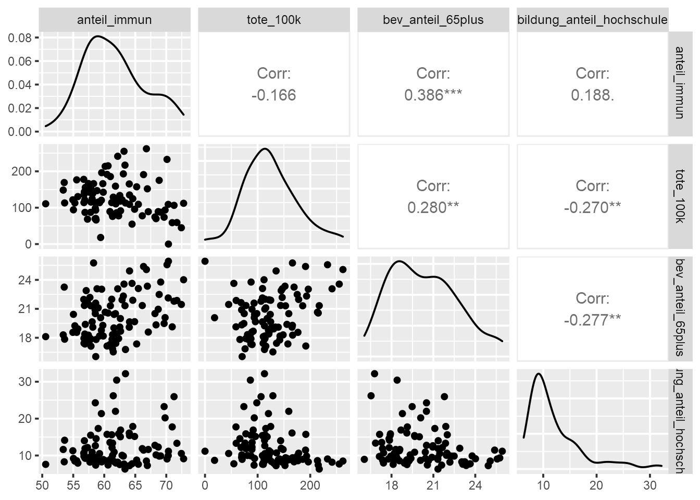</p>
<p>Gemäß unserer <strong>Daumenregel “Keine Korrelation über 0,8”</strong> können wir</p>
<ul>
<li>davon ausgehen, dass keine implizite Ungleichgewichtung der Variablen stattfindet;</li>
<li>auf ein Ausscheiden hoch korrelierter Variablen verzichten.</li>
</ul>
</div>
<div id="ein-blick-auf-die-varianz-der-ausgewählten-variablen" class="section level3 hasAnchor" number="7.3.3">
<h3><span class="header-section-number">7.3.3</span> Ein Blick auf die Varianz der ausgewählten Variablen<a href="07_cluster_I.html#ein-blick-auf-die-varianz-der-ausgewählten-variablen" class="anchor-section" aria-label="Anchor link to header"></a></h3>
<p>Hier interessieren wir uns vor allem für die Streuung dieser Variablen: Je weniger Variablen streuen - also je eher sie einer Konstante entsprechen - umso weniger eigenen sie sich für clusteranalytische Verfahren. Konkrete Richtwerte bzw. Daumenregeln zum Kriterium der Streuung gibt es nicht, es obliegt damit der Analystin bzw. dem Analysten über die Akzeptabilität der Streuung zu entscheiden.</p>
<p>Also:</p>
<div class="sourceCode" id="cb87"><pre class="sourceCode r"><code class="sourceCode r"><span id="cb87-1"><a href="07_cluster_I.html#cb87-1" aria-hidden="true" tabindex="-1"></a>streuungClustervars <span class="ot">&lt;-</span> sel_daten <span class="sc">%&gt;%</span></span>
<span id="cb87-2"><a href="07_cluster_I.html#cb87-2" aria-hidden="true" tabindex="-1"></a>  <span class="fu">select</span>(<span class="fu">all_of</span>(myVars)) <span class="sc">%&gt;%</span></span>
<span id="cb87-3"><a href="07_cluster_I.html#cb87-3" aria-hidden="true" tabindex="-1"></a>  <span class="fu">pivot_longer</span>(<span class="at">cols =</span> anteil_immun<span class="sc">:</span>bildung_anteil_hochschule, </span>
<span id="cb87-4"><a href="07_cluster_I.html#cb87-4" aria-hidden="true" tabindex="-1"></a>               <span class="at">names_to =</span> <span class="st">&quot;Variable&quot;</span>, <span class="at">values_to =</span> <span class="st">&quot;Messwert&quot;</span>)</span>
<span id="cb87-5"><a href="07_cluster_I.html#cb87-5" aria-hidden="true" tabindex="-1"></a><span class="fu">ggplot</span>(streuungClustervars, <span class="fu">aes</span>(<span class="at">x =</span> Variable, <span class="at">y =</span> Messwert)) <span class="sc">+</span></span>
<span id="cb87-6"><a href="07_cluster_I.html#cb87-6" aria-hidden="true" tabindex="-1"></a>  <span class="fu">geom_boxplot</span>() <span class="sc">+</span></span>
<span id="cb87-7"><a href="07_cluster_I.html#cb87-7" aria-hidden="true" tabindex="-1"></a>  <span class="fu">geom_jitter</span>(<span class="at">width=</span><span class="fl">0.1</span>,<span class="at">alpha=</span><span class="fl">0.2</span>, <span class="at">color=</span><span class="st">&quot;red&quot;</span>) <span class="sc">+</span></span>
<span id="cb87-8"><a href="07_cluster_I.html#cb87-8" aria-hidden="true" tabindex="-1"></a>  <span class="fu">theme</span>(<span class="at">axis.text.x=</span><span class="fu">element_text</span>(<span class="at">angle =</span> <span class="dv">45</span>, <span class="at">hjust =</span> <span class="dv">1</span>))</span></code></pre></div>
<p>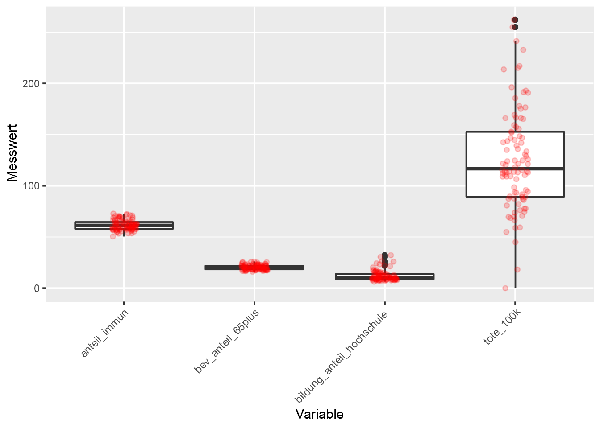</p>
<p>Hier sehen wir zunächst, dass Punkt 4 unserer Vorüberlegungen - die Vergleichbarkeit der Messskalen - nicht gegeben ist. Eine sinnvolle Einschätzung der Streuungen in unseren Cluster-Variablen können wir somit nicht vornehmen.</p>
<p>Etwas Abhilfe schafft uns eine Überblick auf einige numerische Lage- und Verteilungsmaße:</p>
<div class="sourceCode" id="cb88"><pre class="sourceCode r"><code class="sourceCode r"><span id="cb88-1"><a href="07_cluster_I.html#cb88-1" aria-hidden="true" tabindex="-1"></a>sel_daten <span class="sc">%&gt;%</span></span>
<span id="cb88-2"><a href="07_cluster_I.html#cb88-2" aria-hidden="true" tabindex="-1"></a>  <span class="fu">select</span>(<span class="fu">all_of</span>(myVars)) <span class="sc">%&gt;%</span></span>
<span id="cb88-3"><a href="07_cluster_I.html#cb88-3" aria-hidden="true" tabindex="-1"></a>  <span class="fu">summary</span>()</span></code></pre></div>
<pre><code>##   anteil_immun     tote_100k      bev_anteil_65plus
##  Min.   :50.56   Min.   :  0.00   Min.   :16.05    
##  1st Qu.:57.91   1st Qu.: 89.35   1st Qu.:18.34    
##  Median :61.23   Median :116.83   Median :20.09    
##  Mean   :61.67   Mean   :125.07   Mean   :20.33    
##  3rd Qu.:64.57   3rd Qu.:152.73   3rd Qu.:21.92    
##  Max.   :72.80   Max.   :262.10   Max.   :25.93    
##  bildung_anteil_hochschule
##  Min.   : 6.332           
##  1st Qu.: 8.760           
##  Median :10.117           
##  Mean   :12.128           
##  3rd Qu.:13.898           
##  Max.   :32.179</code></pre>
<p>Eine wirklich befriedigende Einschätzung der Streuung gelingt jedoch erst, nachdem wir die Cluster-Variablen z-transformiert haben:</p>
<div class="sourceCode" id="cb90"><pre class="sourceCode r"><code class="sourceCode r"><span id="cb90-1"><a href="07_cluster_I.html#cb90-1" aria-hidden="true" tabindex="-1"></a>sel_daten_trans <span class="ot">&lt;-</span> sel_daten <span class="sc">%&gt;%</span></span>
<span id="cb90-2"><a href="07_cluster_I.html#cb90-2" aria-hidden="true" tabindex="-1"></a>  <span class="fu">mutate</span>(<span class="fu">across</span>(<span class="fu">all_of</span>(myVars),scale))</span></code></pre></div>
<blockquote>
<p><strong>👉 Exkurs:
Die z-Transformation und ihre Vorteile bei Clusterungen</strong> Ähnlich wie im Fall multipler Regressionen bietet es sich auch bei clusteranalytischen Verfahren an, metrische Variablen vor der Clusterung einer Z-Transformation zu unterziehen. Diese Transformation verhindert, dass über die unterschiedlichen Wertspannweiten und -lagen der Variablen eine implizite Gewichtung bei der Ermittlung von Distanzmaßen vorgenommen wird.</p>
</blockquote>
<p>Und nun:</p>
<div class="sourceCode" id="cb91"><pre class="sourceCode r"><code class="sourceCode r"><span id="cb91-1"><a href="07_cluster_I.html#cb91-1" aria-hidden="true" tabindex="-1"></a>streuungClustervars <span class="ot">&lt;-</span> sel_daten_trans <span class="sc">%&gt;%</span></span>
<span id="cb91-2"><a href="07_cluster_I.html#cb91-2" aria-hidden="true" tabindex="-1"></a>  <span class="fu">select</span>(<span class="fu">all_of</span>(myVars)) <span class="sc">%&gt;%</span></span>
<span id="cb91-3"><a href="07_cluster_I.html#cb91-3" aria-hidden="true" tabindex="-1"></a>  <span class="fu">pivot_longer</span>(<span class="at">cols =</span> anteil_immun<span class="sc">:</span>bildung_anteil_hochschule, </span>
<span id="cb91-4"><a href="07_cluster_I.html#cb91-4" aria-hidden="true" tabindex="-1"></a>               <span class="at">names_to =</span> <span class="st">&quot;Variable&quot;</span>, <span class="at">values_to =</span> <span class="st">&quot;Messwert&quot;</span>)</span>
<span id="cb91-5"><a href="07_cluster_I.html#cb91-5" aria-hidden="true" tabindex="-1"></a><span class="fu">ggplot</span>(streuungClustervars, <span class="fu">aes</span>(<span class="at">x =</span> Variable, <span class="at">y =</span> Messwert)) <span class="sc">+</span></span>
<span id="cb91-6"><a href="07_cluster_I.html#cb91-6" aria-hidden="true" tabindex="-1"></a>  <span class="fu">geom_boxplot</span>() <span class="sc">+</span></span>
<span id="cb91-7"><a href="07_cluster_I.html#cb91-7" aria-hidden="true" tabindex="-1"></a>  <span class="fu">geom_jitter</span>(<span class="at">width=</span><span class="fl">0.1</span>,<span class="at">alpha=</span><span class="fl">0.2</span>, <span class="at">color=</span><span class="st">&quot;red&quot;</span>) <span class="sc">+</span></span>
<span id="cb91-8"><a href="07_cluster_I.html#cb91-8" aria-hidden="true" tabindex="-1"></a>  <span class="fu">theme</span>(<span class="at">axis.text.x=</span><span class="fu">element_text</span>(<span class="at">angle =</span> <span class="dv">45</span>, <span class="at">hjust =</span> <span class="dv">1</span>))</span></code></pre></div>
<p>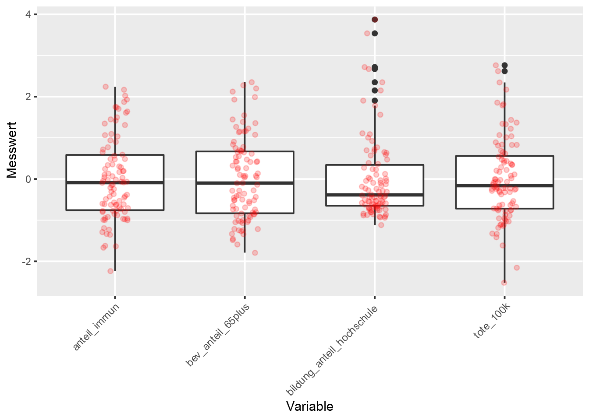</p>
<p>Wir sehen nun, dass bei allen Cluster-Variablen die Werte innerhalb ihrer zentralen 50% (= Höhe der Box) als auch über die jeweiligen Spannweiten gut verteilt sind. Wir müssen daher keine dieser Variablen aufgrund zu geringer Streuung vorab ausscheiden.</p>
</div>
<div id="die-identifikation-clusteranalytischer-ausreißer" class="section level3 hasAnchor" number="7.3.4">
<h3><span class="header-section-number">7.3.4</span> Die Identifikation clusteranalytischer Ausreißer<a href="07_cluster_I.html#die-identifikation-clusteranalytischer-ausreißer" class="anchor-section" aria-label="Anchor link to header"></a></h3>
<p>Wie eingangs bereits erwähnt, ist die Identifikation von Ausreißern bei Clusterungen ein wichtiger vorbereitender Schritt.</p>
<p><strong>🤔 Warum?</strong></p>
<p>Zentrale Zielsetzung clusteranalytischer Verfahren ist die Zuordnung aller Beobachtungseinheiten in eine überschaubare Zahl an Gruppen. Diese Gruppen sollen dabei eine möglichst hohe Intracluster-Homogenität aufweisen, also möglichst ähnlich Element umfassen. Da Ausreißer per Definition eben sehr unähnliche Beobachtungseinheiten darstellen, würden deren Berücksichtigung bei Clusterungen sich negativ auf diese Homogenität auswirken.</p>
<p>Identifizierte Ausreißer werden dabei jedoch nicht gänzlich aus der Clusterung entfernt. Vielmehr können diese vor der eigentlichen Clusterbildung manuell in einen eigenen Ausreißer-Cluster verschoben werden.</p>
<p>Eine klassische Methode bei hierarchischen Clusterungen Ausreißer zu identifizieren, ist eine ex-ante Clusterung mittels des Single-Linkage Fusionsalgorithmus. Dieser erzeugt tendenziell wenige große Cluster und isoliert effektiv Ausreißer.</p>
<p>Wir berechnen dabei zunächst die Euklidische Distanz zwischen allen Merkmalsträgern und wenden auf diese den Single-Linkage Fusionsalgorithmus an:</p>
<div class="sourceCode" id="cb92"><pre class="sourceCode r"><code class="sourceCode r"><span id="cb92-1"><a href="07_cluster_I.html#cb92-1" aria-hidden="true" tabindex="-1"></a>d0 <span class="ot">&lt;-</span> <span class="fu">dist</span>(sel_daten_trans[myVars], <span class="at">method =</span> <span class="st">&quot;euclidean&quot;</span>)</span>
<span id="cb92-2"><a href="07_cluster_I.html#cb92-2" aria-hidden="true" tabindex="-1"></a>fit0 <span class="ot">&lt;-</span> <span class="fu">hclust</span>(d0, <span class="at">method=</span><span class="st">&quot;single&quot;</span>)</span></code></pre></div>
<p>Um den im Objekt “fit0” enthaltenden hierarchischen Fusionsverlauf sichtbar zu machen, nutzen wir ein <a href="https://de.wikipedia.org/wiki/Hierarchische_Clusteranalyse#Dendrogramm">Dendrogramm</a>:</p>
<div class="sourceCode" id="cb93"><pre class="sourceCode r"><code class="sourceCode r"><span id="cb93-1"><a href="07_cluster_I.html#cb93-1" aria-hidden="true" tabindex="-1"></a><span class="fu">plot</span>(fit0, <span class="at">labels =</span> sel_daten_trans<span class="sc">$</span>bez_id, <span class="at">cex =</span> <span class="fl">0.75</span>,</span>
<span id="cb93-2"><a href="07_cluster_I.html#cb93-2" aria-hidden="true" tabindex="-1"></a>     <span class="at">main =</span> <span class="st">&quot;Single Linkage Clusterung&quot;</span>)</span></code></pre></div>
<p>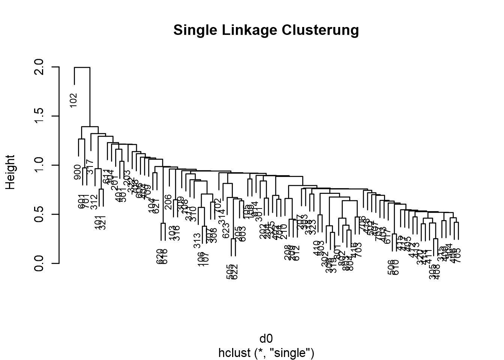</p>
<p>Wir sehen, dass der Single-Linkage Fusionsalgorithmus eine lange Kette miteinander fusionierter Cluster bildet. Erst im letzten Schritt (im Dendrogramm links oben) wird dieser Metacluster mit dem Bezirk 102 (Rust im Burgenland) vereinigt. Der letzte vertikale Sprung vom kettenartigen Metacluster zum Bezirk 102 deutet an, dass beide Cluster sich deutlich von einander unterscheiden. Wir können daher davon ausgehen, dass der Bezirk 102 einen Ausreißer darstellt.</p>
<p>Um in der finalen Clusterung die Intracluster-Homogenität zu sichern, ordnen wir den Bezirk 102 einem eigenen (ex-ante) Ausreißercluster zu. Für die finale Clusterung können wir daher den Bezirk 102 aus dem Datensatz entfernen:</p>
<div class="sourceCode" id="cb94"><pre class="sourceCode r"><code class="sourceCode r"><span id="cb94-1"><a href="07_cluster_I.html#cb94-1" aria-hidden="true" tabindex="-1"></a>sel_daten_trans_2 <span class="ot">&lt;-</span> sel_daten_trans <span class="sc">%&gt;%</span></span>
<span id="cb94-2"><a href="07_cluster_I.html#cb94-2" aria-hidden="true" tabindex="-1"></a>  <span class="fu">filter</span>(bez_id <span class="sc">!=</span> <span class="st">&quot;102&quot;</span>)</span></code></pre></div>
<hr />
<p><strong>👉 Zwischenfazit:</strong><br />
Wir konnten anhand der letzten Schritte sicherstellen, dass</p>
<ul>
<li>unsere Cluster-Variablen nicht (zu stark) miteinander korrelieren;</li>
<li>unsere Cluster-variablen über genügend Streuung verfügen;</li>
<li>unsere Cluster-Variablen z-transformiert wurden, um deren unterschiedliche Messskalen auszugleichen;</li>
<li>wir den Bezirk 102 (Rust im Burgenland) vorab dem Ausreißercluster zugeordnet haben.</li>
</ul>
<p>Der abschließenden Clusterung steht damit nichts mehr im Wege.</p>
<hr />
</div>
</div>
<div id="die-clusterung-der-bezirke" class="section level2 hasAnchor" number="7.4">
<h2><span class="header-section-number">7.4</span> Die Clusterung der Bezirke<a href="07_cluster_I.html#die-clusterung-der-bezirke" class="anchor-section" aria-label="Anchor link to header"></a></h2>
<p>Wie in den einleitenden Folien dargestellt (vgl. Kapitel <a href="07_cluster_I.html#cluster1">7</a>), nutzen wir für die finale Clusterung den <a href="https://en.wikipedia.org/wiki/Hierarchical_clustering#Linkage_criteria">Ward-Fusionsalgorithmus</a>. Dieser Algorithmus versucht, die Varianz innerhalb der gebildeten Cluster zu minimieren und liefert meist mehrere, gleich stark besetzte Cluster.</p>
<p>Dabei ermitteln wir zuerst wieder die euklidischen Distanzen zwischen den Merkmalsträgern und wenden auf diese den Ward-Algorithmus an:</p>
<div class="sourceCode" id="cb95"><pre class="sourceCode r"><code class="sourceCode r"><span id="cb95-1"><a href="07_cluster_I.html#cb95-1" aria-hidden="true" tabindex="-1"></a>d1 <span class="ot">&lt;-</span> <span class="fu">dist</span>(sel_daten_trans_2[myVars], <span class="at">method =</span> <span class="st">&quot;euclidean&quot;</span>)</span>
<span id="cb95-2"><a href="07_cluster_I.html#cb95-2" aria-hidden="true" tabindex="-1"></a>fit1 <span class="ot">&lt;-</span> <span class="fu">hclust</span>(d1, <span class="at">method=</span><span class="st">&quot;ward.D2&quot;</span>)</span>
<span id="cb95-3"><a href="07_cluster_I.html#cb95-3" aria-hidden="true" tabindex="-1"></a><span class="fu">plot</span>(fit1, <span class="at">labels =</span> sel_daten_trans_2<span class="sc">$</span>bez_id, <span class="at">cex =</span> <span class="fl">0.75</span>,</span>
<span id="cb95-4"><a href="07_cluster_I.html#cb95-4" aria-hidden="true" tabindex="-1"></a>     <span class="at">main =</span> <span class="st">&quot;Ward Clusterung&quot;</span>)</span></code></pre></div>
<p>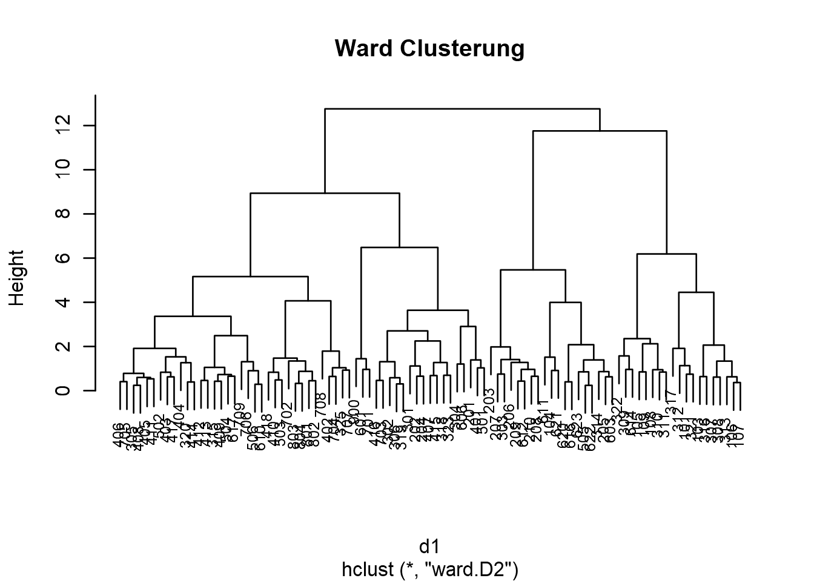</p>
<p>Im Vergleich zur Identifikation der Ausreißer mittels des Single-Linkage-Algorithmus sehen wir hier einen deutlich homogeneren Besatz der einzelnen Äste des Dendrogramms.</p>
<div id="die-anzahl-der-cluster-bestimmen" class="section level3 hasAnchor" number="7.4.1">
<h3><span class="header-section-number">7.4.1</span> Die Anzahl der Cluster bestimmen<a href="07_cluster_I.html#die-anzahl-der-cluster-bestimmen" class="anchor-section" aria-label="Anchor link to header"></a></h3>
<p>Ein klassischer Weg zu Bestimmung der Clusteranzahl ist das sgn. <a href="https://en.wikipedia.org/wiki/Elbow_method_(clustering)">Elbow-Kriterium</a>: Man betrachtet dabei die Entwicklung der Intracluster-Heterogenität im Laufe der hierarchischen Clusterfusionierung. Ein Sprung (= Elbow) in dieser Heterogenitätsentwicklung kennzeichnet dabei eine mögliche Clusteranzahl. Da es üblicherweise mehrerer solcher Elbows geben kann, gilt es dabei eine Abwägung zwischen der Anzahl der Cluster (Interpretierbarkeit) und deren Heterogenität zu treffen.</p>
<p>Wieviele Cluster “genug” bzw. “ideal” sind, lässt sich pauschal nicht beantworten. Es gilt dabei eine Balance aus inhaltlicher Auflösung und Übersichtlichkeit der Ergebnisse zu finden. Vermutlich lässt sich folgende Daumenregel auf viele sozialwissenschaftliche Fragestellungen anwenden:</p>
<p><strong>👉 Definitiv weniger als 10, besser noch weniger als 7 Cluster.</strong></p>
<p>Aber wie gesagt, die konkrete Entscheidung zur Anzahl der Cluster sollte aus der Abwägung von inhaltlicher Auflösung und Übersichtlichkeit der Ergebnisse getroffen werden. In letzter Konsequenz kann dies zu zielgruppenspezifischen Lösungen führen: Eine populärwissenschaftliche Ergebnisaufbereitung wird vermutlich von einer übersichtlicheren Lösung mit weniger Clustern profitieren. Eine Ergebnisdarstellung für ExpertInnen kann mit einer komplexeren Lösung (= mehr Cluster) auch differenziertere Antworten liefern.</p>
<p>Kommen wir aber zurück zum Elbow-Diagramm. Dieses erhalten wir mittels:</p>
<div class="sourceCode" id="cb96"><pre class="sourceCode r"><code class="sourceCode r"><span id="cb96-1"><a href="07_cluster_I.html#cb96-1" aria-hidden="true" tabindex="-1"></a><span class="co"># Heterogenität der letzten 10 Schritte holen</span></span>
<span id="cb96-2"><a href="07_cluster_I.html#cb96-2" aria-hidden="true" tabindex="-1"></a>height <span class="ot">&lt;-</span> <span class="fu">sort</span>(fit1<span class="sc">$</span>height)</span>
<span id="cb96-3"><a href="07_cluster_I.html#cb96-3" aria-hidden="true" tabindex="-1"></a>Schritt <span class="ot">&lt;-</span> <span class="fu">c</span>(<span class="dv">10</span><span class="sc">:</span><span class="dv">1</span>)</span>
<span id="cb96-4"><a href="07_cluster_I.html#cb96-4" aria-hidden="true" tabindex="-1"></a>height <span class="ot">&lt;-</span> height[(<span class="fu">length</span>(height)<span class="sc">-</span><span class="dv">9</span>)<span class="sc">:</span><span class="fu">length</span>(height)]</span>
<span id="cb96-5"><a href="07_cluster_I.html#cb96-5" aria-hidden="true" tabindex="-1"></a>screeplot_data_1 <span class="ot">&lt;-</span> <span class="fu">data.frame</span>(Schritt, height)</span>
<span id="cb96-6"><a href="07_cluster_I.html#cb96-6" aria-hidden="true" tabindex="-1"></a><span class="co"># plotten</span></span>
<span id="cb96-7"><a href="07_cluster_I.html#cb96-7" aria-hidden="true" tabindex="-1"></a><span class="fu">ggplot</span>(screeplot_data_1, <span class="fu">aes</span>(<span class="at">x=</span>Schritt, <span class="at">y=</span>height)) <span class="sc">+</span> </span>
<span id="cb96-8"><a href="07_cluster_I.html#cb96-8" aria-hidden="true" tabindex="-1"></a>  <span class="fu">geom_line</span>(<span class="at">size=</span><span class="dv">1</span>) <span class="sc">+</span></span>
<span id="cb96-9"><a href="07_cluster_I.html#cb96-9" aria-hidden="true" tabindex="-1"></a>  <span class="fu">scale_x_continuous</span>(<span class="at">breaks=</span>Schritt) <span class="sc">+</span></span>
<span id="cb96-10"><a href="07_cluster_I.html#cb96-10" aria-hidden="true" tabindex="-1"></a>  <span class="fu">labs</span>(<span class="at">x =</span> <span class="st">&quot;Anzhal Cluster&quot;</span>) <span class="sc">+</span></span>
<span id="cb96-11"><a href="07_cluster_I.html#cb96-11" aria-hidden="true" tabindex="-1"></a>  <span class="fu">geom_vline</span>(<span class="at">xintercept=</span><span class="dv">4</span>, <span class="at">color =</span> <span class="st">&quot;red&quot;</span>) <span class="sc">+</span></span>
<span id="cb96-12"><a href="07_cluster_I.html#cb96-12" aria-hidden="true" tabindex="-1"></a>  <span class="fu">geom_vline</span>(<span class="at">xintercept=</span><span class="dv">5</span>, <span class="at">linetype=</span><span class="st">&quot;dashed&quot;</span>, <span class="at">color =</span> <span class="st">&quot;red&quot;</span>) <span class="sc">+</span></span>
<span id="cb96-13"><a href="07_cluster_I.html#cb96-13" aria-hidden="true" tabindex="-1"></a>  <span class="fu">geom_vline</span>(<span class="at">xintercept=</span><span class="dv">9</span>, <span class="at">linetype=</span><span class="st">&quot;solid&quot;</span>, <span class="at">color =</span> <span class="st">&quot;red&quot;</span>)</span></code></pre></div>
<p>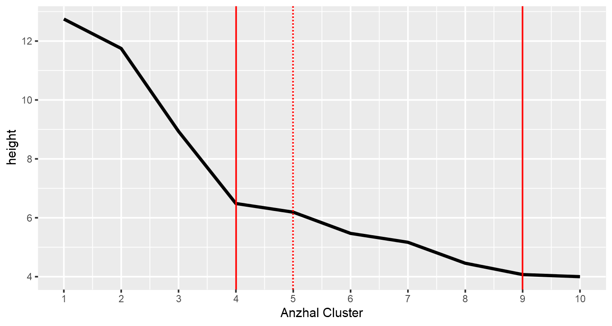</p>
<blockquote>
<p><strong>👉 Exkurs:</strong>
Die von R als “height” bezeichnete Maß der Heterogenität entspricht bei der Ward-Methode der über alle Cluster aufsummierten quadrierten Error Sum of Squares (ESS).</p>
</blockquote>
<p>Wir sehen, dass wir bei Lösungen mit 4 und 9 Clustern die deutlichsten Knicke in der Zunahme der Heterogenität der Cluster sehen. Da wir aber zwischen diesen beiden Lösungen ein kontinuierliches Ansteigen dieser Heterogenität beobachten können, fällt eine definitive Entscheidung zur Anzahl der Cluster schwer.</p>
<p>neben dem Elbow-Kriterium gibt es mittlerweile eine Vielzahl vor Verfahren zur Ermittlung der Cluster-Anzahl (vgl. <span class="citation">Kassambara (<a href="99_lit.html#ref-Kassambara2017" role="doc-biblioref">2017</a>)</span>, 128ff.). Ein klassischer Zugang, die Güte einer gewählten Clusteranzahl zu beurteilen, ist deren Trennschärfe zu visualisieren. Dazu werden die zur Clusterung verwendeten Variablen mittels einer <a href="https://en.wikipedia.org/wiki/Principal_component_analysis">Hauptkomponentenanalyse</a> in zwei orthogonale (= unkorrelierte) Komponenten überführt. Dadurch kann eine Clusterlösung als zweidimensionaler Plot dargestellt werden.</p>
<p>Anhand solcher Plots können wir zwei Eigenschaften einer Clusterlösung beurteilen:</p>
<ul>
<li>Die Intracluster-Homogenität: kompakte Punktwolken in den Clustern</li>
<li>Die Intercluster-Heterogenität: Abstand &amp; Überlappung der Cluster</li>
</ul>
<p>Und da wir noch nach eine Lösung zwischen 4 und 9 Clustern suchen:</p>
<div class="sourceCode" id="cb97"><pre class="sourceCode r"><code class="sourceCode r"><span id="cb97-1"><a href="07_cluster_I.html#cb97-1" aria-hidden="true" tabindex="-1"></a><span class="fu">library</span>(cluster)</span>
<span id="cb97-2"><a href="07_cluster_I.html#cb97-2" aria-hidden="true" tabindex="-1"></a><span class="fu">par</span>(<span class="at">mfrow=</span><span class="fu">c</span>(<span class="dv">3</span>,<span class="dv">2</span>))</span>
<span id="cb97-3"><a href="07_cluster_I.html#cb97-3" aria-hidden="true" tabindex="-1"></a><span class="fu">clusplot</span>(sel_daten_trans_2[myVars], <span class="fu">cutree</span>(fit1, <span class="at">k =</span> <span class="dv">4</span>),</span>
<span id="cb97-4"><a href="07_cluster_I.html#cb97-4" aria-hidden="true" tabindex="-1"></a>         <span class="at">labels=</span><span class="dv">4</span>, <span class="at">color=</span><span class="cn">TRUE</span>, <span class="at">shade=</span><span class="cn">FALSE</span>, <span class="at">lines =</span> <span class="cn">FALSE</span>, <span class="at">col.p =</span> <span class="fu">cutree</span>(fit1, <span class="at">k =</span> <span class="dv">4</span>),</span>
<span id="cb97-5"><a href="07_cluster_I.html#cb97-5" aria-hidden="true" tabindex="-1"></a>         <span class="at">main =</span> <span class="st">&quot;Bivariater Clusterplot n = 4&quot;</span>)</span>
<span id="cb97-6"><a href="07_cluster_I.html#cb97-6" aria-hidden="true" tabindex="-1"></a><span class="fu">clusplot</span>(sel_daten_trans_2[myVars], <span class="fu">cutree</span>(fit1, <span class="at">k =</span> <span class="dv">5</span>),</span>
<span id="cb97-7"><a href="07_cluster_I.html#cb97-7" aria-hidden="true" tabindex="-1"></a>         <span class="at">labels=</span><span class="dv">4</span>, <span class="at">color=</span><span class="cn">TRUE</span>, <span class="at">shade=</span><span class="cn">FALSE</span>, <span class="at">lines =</span> <span class="cn">FALSE</span>, <span class="at">col.p =</span> <span class="fu">cutree</span>(fit1, <span class="at">k =</span> <span class="dv">5</span>),</span>
<span id="cb97-8"><a href="07_cluster_I.html#cb97-8" aria-hidden="true" tabindex="-1"></a>         <span class="at">main =</span> <span class="st">&quot;Bivariater Clusterplot n = 5&quot;</span>)</span>
<span id="cb97-9"><a href="07_cluster_I.html#cb97-9" aria-hidden="true" tabindex="-1"></a><span class="fu">clusplot</span>(sel_daten_trans_2[myVars], <span class="fu">cutree</span>(fit1, <span class="at">k =</span> <span class="dv">6</span>),</span>
<span id="cb97-10"><a href="07_cluster_I.html#cb97-10" aria-hidden="true" tabindex="-1"></a>         <span class="at">labels=</span><span class="dv">4</span>, <span class="at">color=</span><span class="cn">TRUE</span>, <span class="at">shade=</span><span class="cn">FALSE</span>, <span class="at">lines =</span> <span class="cn">FALSE</span>, <span class="at">col.p =</span> <span class="fu">cutree</span>(fit1, <span class="at">k =</span> <span class="dv">6</span>),</span>
<span id="cb97-11"><a href="07_cluster_I.html#cb97-11" aria-hidden="true" tabindex="-1"></a>         <span class="at">main =</span> <span class="st">&quot;Bivariater Clusterplot n = 6&quot;</span>)</span>
<span id="cb97-12"><a href="07_cluster_I.html#cb97-12" aria-hidden="true" tabindex="-1"></a><span class="fu">clusplot</span>(sel_daten_trans_2[myVars], <span class="fu">cutree</span>(fit1, <span class="at">k =</span> <span class="dv">7</span>),</span>
<span id="cb97-13"><a href="07_cluster_I.html#cb97-13" aria-hidden="true" tabindex="-1"></a>         <span class="at">labels=</span><span class="dv">4</span>, <span class="at">color=</span><span class="cn">TRUE</span>, <span class="at">shade=</span><span class="cn">FALSE</span>, <span class="at">lines =</span> <span class="cn">FALSE</span>, <span class="at">col.p =</span> <span class="fu">cutree</span>(fit1, <span class="at">k =</span> <span class="dv">7</span>),</span>
<span id="cb97-14"><a href="07_cluster_I.html#cb97-14" aria-hidden="true" tabindex="-1"></a>         <span class="at">main =</span> <span class="st">&quot;Bivariater Clusterplot n = 7&quot;</span>)</span>
<span id="cb97-15"><a href="07_cluster_I.html#cb97-15" aria-hidden="true" tabindex="-1"></a><span class="fu">clusplot</span>(sel_daten_trans_2[myVars], <span class="fu">cutree</span>(fit1, <span class="at">k =</span> <span class="dv">8</span>),</span>
<span id="cb97-16"><a href="07_cluster_I.html#cb97-16" aria-hidden="true" tabindex="-1"></a>         <span class="at">labels=</span><span class="dv">4</span>, <span class="at">color=</span><span class="cn">TRUE</span>, <span class="at">shade=</span><span class="cn">FALSE</span>, <span class="at">lines =</span> <span class="cn">FALSE</span>, <span class="at">col.p =</span> <span class="fu">cutree</span>(fit1, <span class="at">k =</span> <span class="dv">8</span>),</span>
<span id="cb97-17"><a href="07_cluster_I.html#cb97-17" aria-hidden="true" tabindex="-1"></a>         <span class="at">main =</span> <span class="st">&quot;Bivariater Clusterplot n = 8&quot;</span>)</span>
<span id="cb97-18"><a href="07_cluster_I.html#cb97-18" aria-hidden="true" tabindex="-1"></a><span class="fu">clusplot</span>(sel_daten_trans_2[myVars], <span class="fu">cutree</span>(fit1, <span class="at">k =</span> <span class="dv">9</span>),</span>
<span id="cb97-19"><a href="07_cluster_I.html#cb97-19" aria-hidden="true" tabindex="-1"></a>         <span class="at">labels=</span><span class="dv">4</span>, <span class="at">color=</span><span class="cn">TRUE</span>, <span class="at">shade=</span><span class="cn">FALSE</span>, <span class="at">lines =</span> <span class="cn">FALSE</span>, <span class="at">col.p =</span> <span class="fu">cutree</span>(fit1, <span class="at">k =</span> <span class="dv">9</span>),</span>
<span id="cb97-20"><a href="07_cluster_I.html#cb97-20" aria-hidden="true" tabindex="-1"></a>         <span class="at">main =</span> <span class="st">&quot;Bivariater Clusterplot n = 9&quot;</span>)</span></code></pre></div>
<p>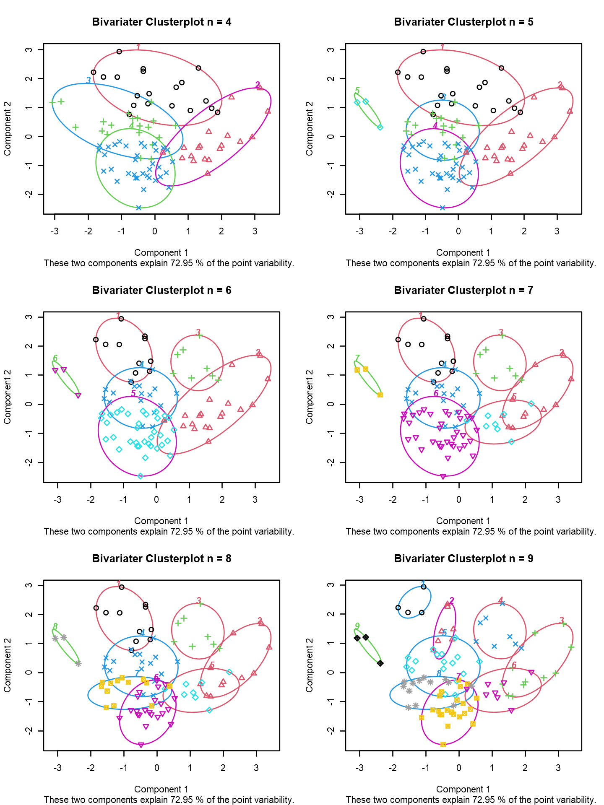</p>
<div class="sourceCode" id="cb98"><pre class="sourceCode r"><code class="sourceCode r"><span id="cb98-1"><a href="07_cluster_I.html#cb98-1" aria-hidden="true" tabindex="-1"></a><span class="fu">par</span>(<span class="at">mfrow=</span><span class="fu">c</span>(<span class="dv">1</span>,<span class="dv">1</span>))</span></code></pre></div>
<p>Als Balance zwischen inhaltlicher Auflösung und Übersichtlichkeit wollen wir uns an dieser Stelle für eine Lösung mit 5 Clustern entscheiden:</p>
<div class="sourceCode" id="cb99"><pre class="sourceCode r"><code class="sourceCode r"><span id="cb99-1"><a href="07_cluster_I.html#cb99-1" aria-hidden="true" tabindex="-1"></a><span class="co"># Anzahl Cluster setzen</span></span>
<span id="cb99-2"><a href="07_cluster_I.html#cb99-2" aria-hidden="true" tabindex="-1"></a>nCluster <span class="ot">&lt;-</span> <span class="dv">5</span></span></code></pre></div>
<p>Um abschließend herauszufinden, welcher Bezirk nun zu welchem dieser fünf Cluster gehört, greifen wir noch einmal auf das Dendrogramm zurück:<br />
Wir schneiden an jener Stelle, wo wir fünf senkrechte Linien (= Cluster) treffen.</p>
<div class="sourceCode" id="cb100"><pre class="sourceCode r"><code class="sourceCode r"><span id="cb100-1"><a href="07_cluster_I.html#cb100-1" aria-hidden="true" tabindex="-1"></a><span class="fu">plot</span>(fit1, <span class="at">labels =</span> sel_daten_trans_2<span class="sc">$</span>bez_id, <span class="at">cex =</span> <span class="fl">0.75</span>,</span>
<span id="cb100-2"><a href="07_cluster_I.html#cb100-2" aria-hidden="true" tabindex="-1"></a>     <span class="at">main =</span> <span class="st">&quot;Ward Clusterung&quot;</span>)</span>
<span id="cb100-3"><a href="07_cluster_I.html#cb100-3" aria-hidden="true" tabindex="-1"></a><span class="fu">rect.hclust</span>(fit1, <span class="at">k =</span> nCluster, <span class="at">border=</span><span class="st">&quot;red&quot;</span>)</span></code></pre></div>
<p>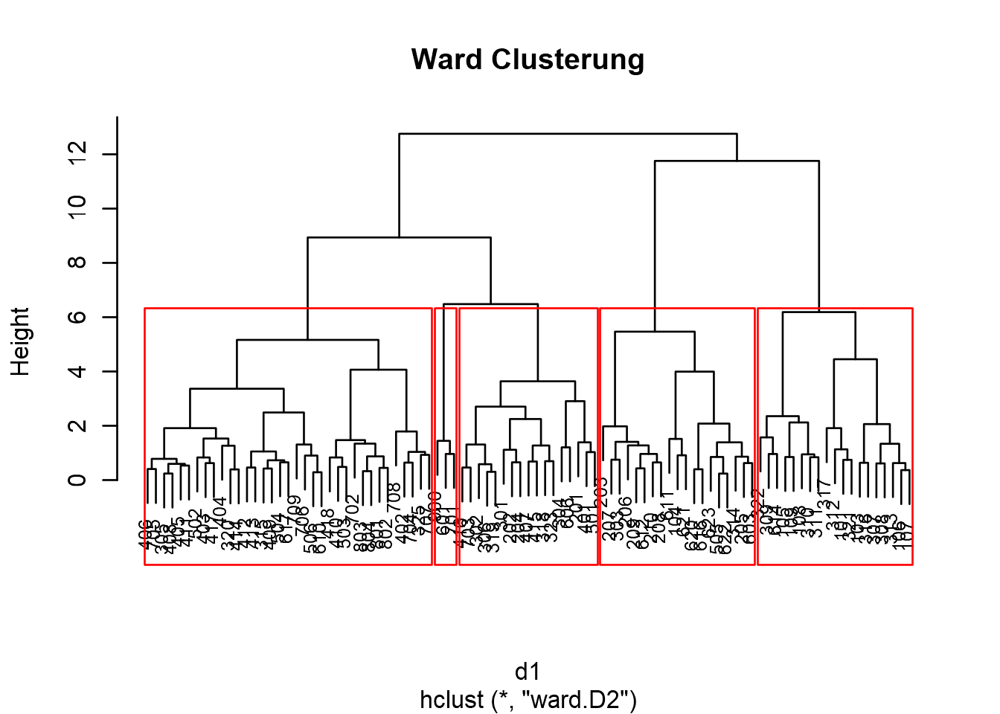</p>
<p>Die von den roten Kästen umschlossenen Bezirke gehören einem Cluster an. Standardmäßig nummeriert R diese Cluster von 1 ganzzahlig aufsteigend durch. Wir erhalten somit folgenden Clusterbesatz:</p>
<div class="sourceCode" id="cb101"><pre class="sourceCode r"><code class="sourceCode r"><span id="cb101-1"><a href="07_cluster_I.html#cb101-1" aria-hidden="true" tabindex="-1"></a><span class="fu">table</span>(<span class="fu">cutree</span>(fit1, <span class="at">k =</span> nCluster))</span></code></pre></div>
<pre><code>## 
##  1  2  3  4  5 
## 19 19 17 35  3</code></pre>
<p>Diese Clusterzuordnungen wollen wir abschließend auch noch in unserem Datensatz ablegen:</p>
<div class="sourceCode" id="cb103"><pre class="sourceCode r"><code class="sourceCode r"><span id="cb103-1"><a href="07_cluster_I.html#cb103-1" aria-hidden="true" tabindex="-1"></a><span class="co"># transformierte Daten</span></span>
<span id="cb103-2"><a href="07_cluster_I.html#cb103-2" aria-hidden="true" tabindex="-1"></a>sel_daten_trans_2<span class="sc">$</span>fit1_cl5 <span class="ot">&lt;-</span> <span class="fu">as_factor</span>(<span class="fu">cutree</span>(fit1, <span class="at">k =</span> nCluster))</span>
<span id="cb103-3"><a href="07_cluster_I.html#cb103-3" aria-hidden="true" tabindex="-1"></a><span class="co"># Rohdaten: Rust zuerst entfernen</span></span>
<span id="cb103-4"><a href="07_cluster_I.html#cb103-4" aria-hidden="true" tabindex="-1"></a>sel_daten_2 <span class="ot">&lt;-</span> sel_daten <span class="sc">%&gt;%</span></span>
<span id="cb103-5"><a href="07_cluster_I.html#cb103-5" aria-hidden="true" tabindex="-1"></a>  <span class="fu">filter</span>(bez_id <span class="sc">!=</span> <span class="st">&quot;102&quot;</span>)</span>
<span id="cb103-6"><a href="07_cluster_I.html#cb103-6" aria-hidden="true" tabindex="-1"></a>sel_daten_2<span class="sc">$</span>fit1_cl5 <span class="ot">&lt;-</span> <span class="fu">as_factor</span>(<span class="fu">cutree</span>(fit1, <span class="at">k =</span> nCluster))</span></code></pre></div>
<p>Der Vollständigkeit halber müssen wir noch den <strong>Bezirk 102</strong> (Rust im Burgenland) noch <strong>manuell</strong> unserem <strong>Ausreißercluster</strong> zuordnen:</p>
<div class="sourceCode" id="cb104"><pre class="sourceCode r"><code class="sourceCode r"><span id="cb104-1"><a href="07_cluster_I.html#cb104-1" aria-hidden="true" tabindex="-1"></a><span class="do">### transformierte Daten</span></span>
<span id="cb104-2"><a href="07_cluster_I.html#cb104-2" aria-hidden="true" tabindex="-1"></a>sel_daten_trans <span class="ot">&lt;-</span> sel_daten_trans_2 <span class="sc">%&gt;%</span></span>
<span id="cb104-3"><a href="07_cluster_I.html#cb104-3" aria-hidden="true" tabindex="-1"></a>  <span class="fu">select</span>(bez_id, fit1_cl5) <span class="sc">%&gt;%</span></span>
<span id="cb104-4"><a href="07_cluster_I.html#cb104-4" aria-hidden="true" tabindex="-1"></a>  <span class="fu">left_join</span>(sel_daten_trans, ., <span class="at">by =</span> <span class="st">&quot;bez_id&quot;</span>)</span>
<span id="cb104-5"><a href="07_cluster_I.html#cb104-5" aria-hidden="true" tabindex="-1"></a><span class="co"># Rust manuell auf &quot;Ausreißer Rust&quot; setzen</span></span>
<span id="cb104-6"><a href="07_cluster_I.html#cb104-6" aria-hidden="true" tabindex="-1"></a>sel_daten_trans <span class="ot">&lt;-</span> sel_daten_trans <span class="sc">%&gt;%</span></span>
<span id="cb104-7"><a href="07_cluster_I.html#cb104-7" aria-hidden="true" tabindex="-1"></a>  <span class="fu">mutate</span>(<span class="at">fit1_cl5 =</span> <span class="fu">fct_explicit_na</span>(fit1_cl5, <span class="at">na_level =</span> <span class="st">&quot;Ausreißer Rust&quot;</span>))</span>
<span id="cb104-8"><a href="07_cluster_I.html#cb104-8" aria-hidden="true" tabindex="-1"></a></span>
<span id="cb104-9"><a href="07_cluster_I.html#cb104-9" aria-hidden="true" tabindex="-1"></a><span class="do">### absolute Daten</span></span>
<span id="cb104-10"><a href="07_cluster_I.html#cb104-10" aria-hidden="true" tabindex="-1"></a>sel_daten <span class="ot">&lt;-</span> sel_daten_2 <span class="sc">%&gt;%</span></span>
<span id="cb104-11"><a href="07_cluster_I.html#cb104-11" aria-hidden="true" tabindex="-1"></a>  <span class="fu">select</span>(bez_id, fit1_cl5) <span class="sc">%&gt;%</span></span>
<span id="cb104-12"><a href="07_cluster_I.html#cb104-12" aria-hidden="true" tabindex="-1"></a>  <span class="fu">left_join</span>(sel_daten, ., <span class="at">by =</span> <span class="st">&quot;bez_id&quot;</span>)</span>
<span id="cb104-13"><a href="07_cluster_I.html#cb104-13" aria-hidden="true" tabindex="-1"></a><span class="co"># Rust manuell auf &quot;Ausreißer Rust&quot; setzen</span></span>
<span id="cb104-14"><a href="07_cluster_I.html#cb104-14" aria-hidden="true" tabindex="-1"></a>sel_daten <span class="ot">&lt;-</span> sel_daten <span class="sc">%&gt;%</span></span>
<span id="cb104-15"><a href="07_cluster_I.html#cb104-15" aria-hidden="true" tabindex="-1"></a>  <span class="fu">mutate</span>(<span class="at">fit1_cl5 =</span> <span class="fu">fct_explicit_na</span>(fit1_cl5, <span class="at">na_level =</span> <span class="st">&quot;Ausreißer Rust&quot;</span>))</span></code></pre></div>
</div>
</div>
<div id="inhaltliche-beschreibung-der-cluster" class="section level2 hasAnchor" number="7.5">
<h2><span class="header-section-number">7.5</span> Inhaltliche Beschreibung der Cluster<a href="07_cluster_I.html#inhaltliche-beschreibung-der-cluster" class="anchor-section" aria-label="Anchor link to header"></a></h2>
<p>Zuletzt bliebe noch die Aufgabe die gefundenen Cluster inhaltlich zu interpretieren.</p>
<p>Dazu können wir die zur Clusterung verwendeten Variablen clusterweise beschreiben und einander gegenüberstellen. Dies kann numerisch erfolgen …</p>
<div class="sourceCode" id="cb105"><pre class="sourceCode r"><code class="sourceCode r"><span id="cb105-1"><a href="07_cluster_I.html#cb105-1" aria-hidden="true" tabindex="-1"></a>sel_daten <span class="sc">%&gt;%</span></span>
<span id="cb105-2"><a href="07_cluster_I.html#cb105-2" aria-hidden="true" tabindex="-1"></a>  <span class="fu">group_by</span>(fit1_cl5) <span class="sc">%&gt;%</span></span>
<span id="cb105-3"><a href="07_cluster_I.html#cb105-3" aria-hidden="true" tabindex="-1"></a>  <span class="fu">summarise</span>(<span class="fu">across</span>(anteil_immun<span class="sc">:</span>bildung_anteil_hochschule, median)) <span class="sc">%&gt;%</span></span>
<span id="cb105-4"><a href="07_cluster_I.html#cb105-4" aria-hidden="true" tabindex="-1"></a>  <span class="fu">kable</span>()</span></code></pre></div>
<table>
<colgroup>
<col width="18%" />
<col width="15%" />
<col width="12%" />
<col width="21%" />
<col width="31%" />
</colgroup>
<thead>
<tr class="header">
<th align="left">fit1_cl5</th>
<th align="right">anteil_immun</th>
<th align="right">tote_100k</th>
<th align="right">bev_anteil_65plus</th>
<th align="right">bildung_anteil_hochschule</th>
</tr>
</thead>
<tbody>
<tr class="odd">
<td align="left">1</td>
<td align="right">68.85573</td>
<td align="right">89.09361</td>
<td align="right">21.79050</td>
<td align="right">10.553889</td>
</tr>
<tr class="even">
<td align="left">2</td>
<td align="right">60.15011</td>
<td align="right">191.03650</td>
<td align="right">22.88942</td>
<td align="right">8.617562</td>
</tr>
<tr class="odd">
<td align="left">3</td>
<td align="right">61.81104</td>
<td align="right">118.11446</td>
<td align="right">19.99639</td>
<td align="right">15.738375</td>
</tr>
<tr class="even">
<td align="left">4</td>
<td align="right">57.85878</td>
<td align="right">113.88156</td>
<td align="right">18.27427</td>
<td align="right">9.367839</td>
</tr>
<tr class="odd">
<td align="left">5</td>
<td align="right">62.00261</td>
<td align="right">113.00638</td>
<td align="right">16.78633</td>
<td align="right">30.438955</td>
</tr>
<tr class="even">
<td align="left">Ausreißer Rust</td>
<td align="right">70.35000</td>
<td align="right">0.00000</td>
<td align="right">25.93340</td>
<td align="right">11.165048</td>
</tr>
</tbody>
</table>
<p>… und/oder graphisch:</p>
<div class="sourceCode" id="cb106"><pre class="sourceCode r"><code class="sourceCode r"><span id="cb106-1"><a href="07_cluster_I.html#cb106-1" aria-hidden="true" tabindex="-1"></a>sel_daten <span class="sc">%&gt;%</span></span>
<span id="cb106-2"><a href="07_cluster_I.html#cb106-2" aria-hidden="true" tabindex="-1"></a>  <span class="fu">group_by</span>(fit1_cl5) <span class="sc">%&gt;%</span></span>
<span id="cb106-3"><a href="07_cluster_I.html#cb106-3" aria-hidden="true" tabindex="-1"></a>  <span class="fu">summarise</span>(<span class="fu">across</span>(<span class="fu">all_of</span>(myVars), mean), <span class="at">.groups=</span><span class="st">&quot;keep&quot;</span>) <span class="sc">%&gt;%</span></span>
<span id="cb106-4"><a href="07_cluster_I.html#cb106-4" aria-hidden="true" tabindex="-1"></a>  <span class="fu">pivot_longer</span>(<span class="fu">all_of</span>(myVars), <span class="at">names_to =</span> <span class="st">&quot;variable&quot;</span>, <span class="at">values_to =</span><span class="st">&quot;wert&quot;</span>) <span class="sc">%&gt;%</span></span>
<span id="cb106-5"><a href="07_cluster_I.html#cb106-5" aria-hidden="true" tabindex="-1"></a>  <span class="fu">ggplot</span>(., <span class="fu">aes</span>(<span class="at">x=</span>variable, <span class="at">y=</span>wert, <span class="at">fill=</span>variable)) <span class="sc">+</span></span>
<span id="cb106-6"><a href="07_cluster_I.html#cb106-6" aria-hidden="true" tabindex="-1"></a>  <span class="fu">geom_bar</span>(<span class="at">stat =</span> <span class="st">&quot;identity&quot;</span>) <span class="sc">+</span></span>
<span id="cb106-7"><a href="07_cluster_I.html#cb106-7" aria-hidden="true" tabindex="-1"></a>  <span class="fu">theme</span>(<span class="at">axis.text.x =</span> <span class="fu">element_text</span>(<span class="at">angle =</span> <span class="dv">90</span>)) <span class="sc">+</span></span>
<span id="cb106-8"><a href="07_cluster_I.html#cb106-8" aria-hidden="true" tabindex="-1"></a>  <span class="fu">facet_wrap</span>(<span class="sc">~</span> fit1_cl5)</span></code></pre></div>
<p>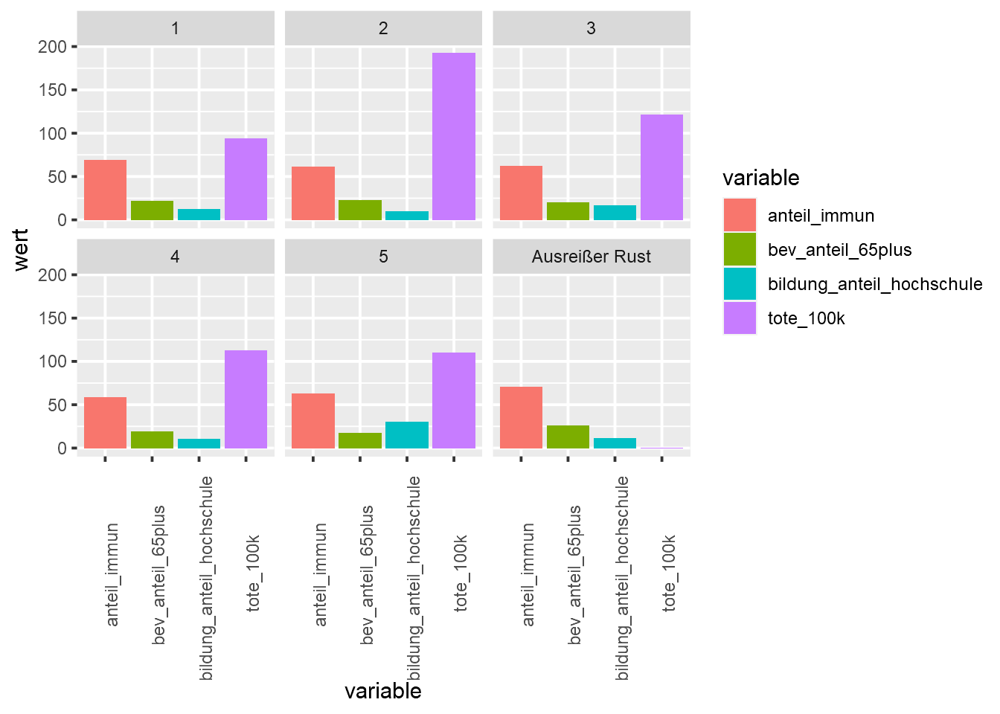</p>
<p>Da es bei absoluten Zahlen manchmal nicht einfach fällt, die Merkmalsausprägungen von Clustern als über- oder unterdurchschnittlich einzuordnen, bietet sich eine Auswertung der z-transformierten Werte an:</p>
<div class="sourceCode" id="cb107"><pre class="sourceCode r"><code class="sourceCode r"><span id="cb107-1"><a href="07_cluster_I.html#cb107-1" aria-hidden="true" tabindex="-1"></a>sel_daten_trans <span class="sc">%&gt;%</span></span>
<span id="cb107-2"><a href="07_cluster_I.html#cb107-2" aria-hidden="true" tabindex="-1"></a>  <span class="fu">group_by</span>(fit1_cl5) <span class="sc">%&gt;%</span></span>
<span id="cb107-3"><a href="07_cluster_I.html#cb107-3" aria-hidden="true" tabindex="-1"></a>  <span class="fu">summarise</span>(<span class="fu">across</span>(<span class="fu">all_of</span>(myVars), mean), <span class="at">.groups=</span><span class="st">&quot;keep&quot;</span>) <span class="sc">%&gt;%</span></span>
<span id="cb107-4"><a href="07_cluster_I.html#cb107-4" aria-hidden="true" tabindex="-1"></a>  <span class="fu">pivot_longer</span>(<span class="fu">all_of</span>(myVars), <span class="at">names_to =</span> <span class="st">&quot;variable&quot;</span>, <span class="at">values_to =</span><span class="st">&quot;wert&quot;</span>) <span class="sc">%&gt;%</span></span>
<span id="cb107-5"><a href="07_cluster_I.html#cb107-5" aria-hidden="true" tabindex="-1"></a>  <span class="fu">ggplot</span>(., <span class="fu">aes</span>(<span class="at">x=</span>variable, <span class="at">y=</span>wert, <span class="at">fill=</span>variable)) <span class="sc">+</span></span>
<span id="cb107-6"><a href="07_cluster_I.html#cb107-6" aria-hidden="true" tabindex="-1"></a>  <span class="fu">geom_bar</span>(<span class="at">stat =</span> <span class="st">&quot;identity&quot;</span>) <span class="sc">+</span></span>
<span id="cb107-7"><a href="07_cluster_I.html#cb107-7" aria-hidden="true" tabindex="-1"></a>  <span class="fu">theme</span>(<span class="at">axis.text.x =</span> <span class="fu">element_text</span>(<span class="at">angle =</span> <span class="dv">90</span>)) <span class="sc">+</span></span>
<span id="cb107-8"><a href="07_cluster_I.html#cb107-8" aria-hidden="true" tabindex="-1"></a>  <span class="fu">facet_wrap</span>(<span class="sc">~</span> fit1_cl5)</span></code></pre></div>
<p>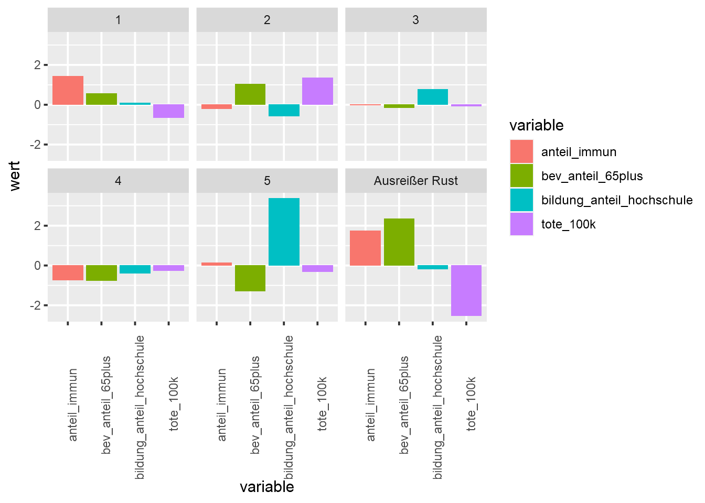</p>
<p>Zusätzlich können die clusterspezifischen Ausprägungen je Variable verglichen werden:</p>
<div class="sourceCode" id="cb108"><pre class="sourceCode r"><code class="sourceCode r"><span id="cb108-1"><a href="07_cluster_I.html#cb108-1" aria-hidden="true" tabindex="-1"></a><span class="fu">ggplot</span>(sel_daten, <span class="fu">aes</span>(<span class="at">x =</span> fit1_cl5, <span class="at">y =</span> anteil_immun, <span class="at">fill =</span> fit1_cl5)) <span class="sc">+</span></span>
<span id="cb108-2"><a href="07_cluster_I.html#cb108-2" aria-hidden="true" tabindex="-1"></a>  <span class="fu">geom_boxplot</span>(<span class="at">outlier.shape =</span> <span class="cn">NA</span>) <span class="sc">+</span></span>
<span id="cb108-3"><a href="07_cluster_I.html#cb108-3" aria-hidden="true" tabindex="-1"></a>  <span class="fu">labs</span>(<span class="at">title =</span> <span class="st">&quot;Anteil Immunisierte&quot;</span>, <span class="at">x =</span> <span class="st">&quot;Cluster&quot;</span>) <span class="sc">+</span></span>
<span id="cb108-4"><a href="07_cluster_I.html#cb108-4" aria-hidden="true" tabindex="-1"></a>  <span class="fu">geom_jitter</span>(<span class="at">width=</span><span class="fl">0.2</span>,<span class="at">alpha=</span><span class="fl">0.25</span>, <span class="at">color=</span><span class="st">&quot;black&quot;</span>) <span class="sc">+</span></span>
<span id="cb108-5"><a href="07_cluster_I.html#cb108-5" aria-hidden="true" tabindex="-1"></a>  <span class="fu">theme</span>(<span class="at">legend.position =</span> <span class="st">&quot;none&quot;</span>)</span></code></pre></div>
<p>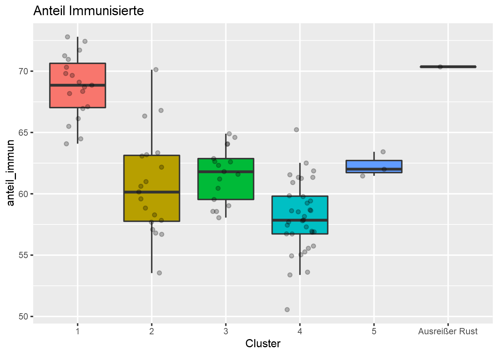</p>
<div class="sourceCode" id="cb109"><pre class="sourceCode r"><code class="sourceCode r"><span id="cb109-1"><a href="07_cluster_I.html#cb109-1" aria-hidden="true" tabindex="-1"></a><span class="fu">ggplot</span>(sel_daten, <span class="fu">aes</span>(<span class="at">x =</span> fit1_cl5, <span class="at">y =</span> tote_100k, <span class="at">fill =</span> fit1_cl5)) <span class="sc">+</span></span>
<span id="cb109-2"><a href="07_cluster_I.html#cb109-2" aria-hidden="true" tabindex="-1"></a>  <span class="fu">geom_boxplot</span>(<span class="at">outlier.shape =</span> <span class="cn">NA</span>) <span class="sc">+</span></span>
<span id="cb109-3"><a href="07_cluster_I.html#cb109-3" aria-hidden="true" tabindex="-1"></a>  <span class="fu">labs</span>(<span class="at">title =</span> <span class="st">&quot;Mortalität&quot;</span>, <span class="at">x =</span> <span class="st">&quot;Cluster&quot;</span>) <span class="sc">+</span></span>
<span id="cb109-4"><a href="07_cluster_I.html#cb109-4" aria-hidden="true" tabindex="-1"></a>  <span class="fu">geom_jitter</span>(<span class="at">width=</span><span class="fl">0.2</span>,<span class="at">alpha=</span><span class="fl">0.25</span>, <span class="at">color=</span><span class="st">&quot;black&quot;</span>) <span class="sc">+</span></span>
<span id="cb109-5"><a href="07_cluster_I.html#cb109-5" aria-hidden="true" tabindex="-1"></a>  <span class="fu">theme</span>(<span class="at">legend.position =</span> <span class="st">&quot;none&quot;</span>)</span></code></pre></div>
<p>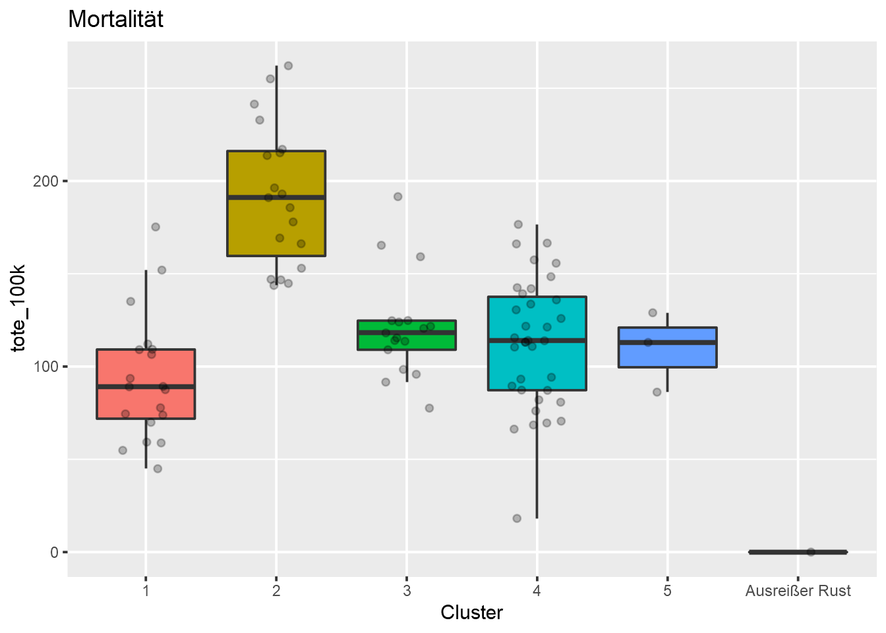</p>
<div class="sourceCode" id="cb110"><pre class="sourceCode r"><code class="sourceCode r"><span id="cb110-1"><a href="07_cluster_I.html#cb110-1" aria-hidden="true" tabindex="-1"></a><span class="fu">ggplot</span>(sel_daten, <span class="fu">aes</span>(<span class="at">x =</span> fit1_cl5, <span class="at">y =</span> bev_anteil_65plus, <span class="at">fill =</span> fit1_cl5)) <span class="sc">+</span></span>
<span id="cb110-2"><a href="07_cluster_I.html#cb110-2" aria-hidden="true" tabindex="-1"></a>  <span class="fu">geom_boxplot</span>(<span class="at">outlier.shape =</span> <span class="cn">NA</span>) <span class="sc">+</span></span>
<span id="cb110-3"><a href="07_cluster_I.html#cb110-3" aria-hidden="true" tabindex="-1"></a>  <span class="fu">labs</span>(<span class="at">title =</span> <span class="st">&quot;Anteil 65+&quot;</span>, <span class="at">x =</span> <span class="st">&quot;Cluster&quot;</span>) <span class="sc">+</span></span>
<span id="cb110-4"><a href="07_cluster_I.html#cb110-4" aria-hidden="true" tabindex="-1"></a>  <span class="fu">geom_jitter</span>(<span class="at">width=</span><span class="fl">0.2</span>,<span class="at">alpha=</span><span class="fl">0.25</span>, <span class="at">color=</span><span class="st">&quot;black&quot;</span>) <span class="sc">+</span></span>
<span id="cb110-5"><a href="07_cluster_I.html#cb110-5" aria-hidden="true" tabindex="-1"></a>  <span class="fu">theme</span>(<span class="at">legend.position =</span> <span class="st">&quot;none&quot;</span>)</span></code></pre></div>
<p>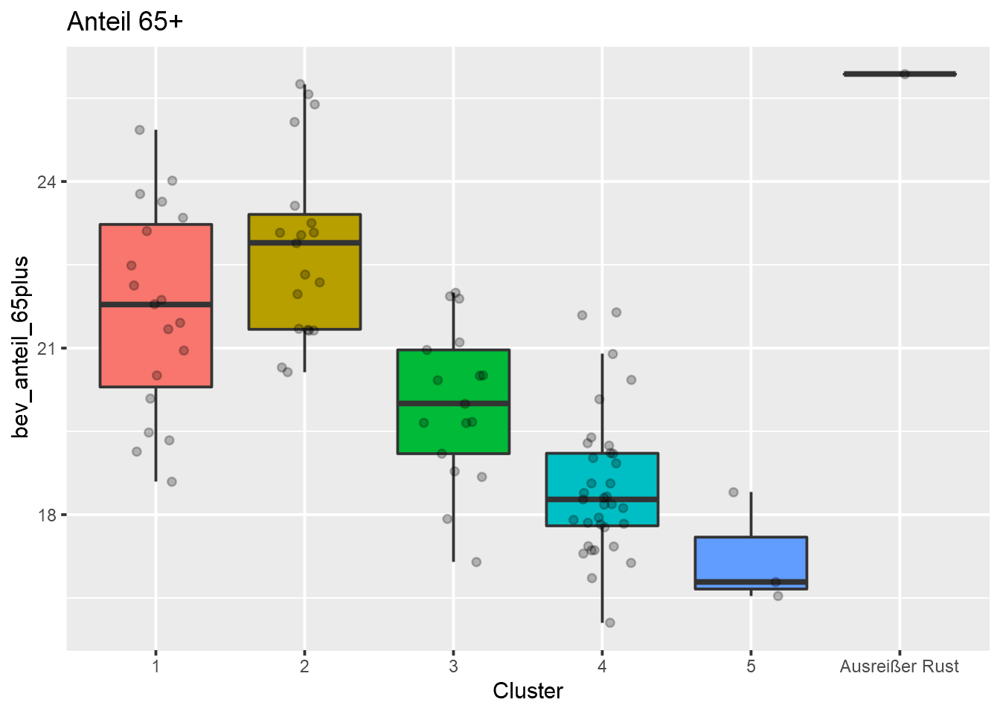</p>
<div class="sourceCode" id="cb111"><pre class="sourceCode r"><code class="sourceCode r"><span id="cb111-1"><a href="07_cluster_I.html#cb111-1" aria-hidden="true" tabindex="-1"></a><span class="fu">ggplot</span>(sel_daten, <span class="fu">aes</span>(<span class="at">x =</span> fit1_cl5, <span class="at">y =</span> bildung_anteil_hochschule, <span class="at">fill =</span> fit1_cl5)) <span class="sc">+</span></span>
<span id="cb111-2"><a href="07_cluster_I.html#cb111-2" aria-hidden="true" tabindex="-1"></a>  <span class="fu">geom_boxplot</span>(<span class="at">outlier.shape =</span> <span class="cn">NA</span>) <span class="sc">+</span></span>
<span id="cb111-3"><a href="07_cluster_I.html#cb111-3" aria-hidden="true" tabindex="-1"></a>  <span class="fu">labs</span>(<span class="at">title =</span> <span class="st">&quot;Anteil Hochschule&quot;</span>, <span class="at">x =</span> <span class="st">&quot;Cluster&quot;</span>) <span class="sc">+</span></span>
<span id="cb111-4"><a href="07_cluster_I.html#cb111-4" aria-hidden="true" tabindex="-1"></a>  <span class="fu">geom_jitter</span>(<span class="at">width=</span><span class="fl">0.2</span>,<span class="at">alpha=</span><span class="fl">0.25</span>, <span class="at">color=</span><span class="st">&quot;black&quot;</span>) <span class="sc">+</span></span>
<span id="cb111-5"><a href="07_cluster_I.html#cb111-5" aria-hidden="true" tabindex="-1"></a>  <span class="fu">theme</span>(<span class="at">legend.position =</span> <span class="st">&quot;none&quot;</span>)</span></code></pre></div>
<p>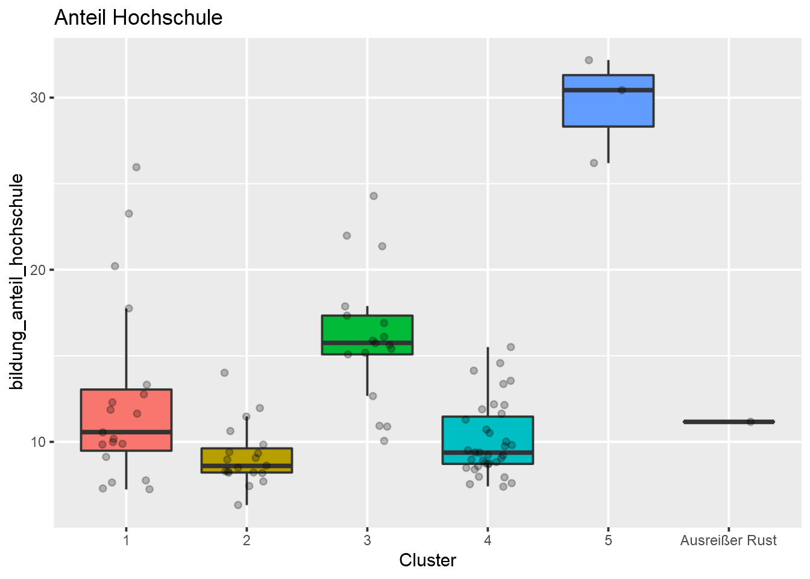</p>
</div>
<div id="darstellung-der-räumlichen-verteilung" class="section level2 hasAnchor" number="7.6">
<h2><span class="header-section-number">7.6</span> Darstellung der räumlichen Verteilung<a href="07_cluster_I.html#darstellung-der-räumlichen-verteilung" class="anchor-section" aria-label="Anchor link to header"></a></h2>
<p>Analog zu Einheit <a href="05_multireg_I.html#reg1">5</a> können wir über eine einfache Choroplethenkarte auch die räumliche Verteilung der gefundenen Clusterlösung etwas näher betrachten.</p>
<p>Dazu müssen wir noch die entsprechenden Geodaten nachziehen. Wir nutzen dazu wieder den aus Einheit <a href="05_multireg_I.html#reg1">5</a> bekannten Datensatz:</p>
<ul>
<li>Politische Bezirke Österreichs 2021:<br />
<a href="https://www.data.gv.at/katalog/dataset/stat_gliederung-osterreichs-in-politische-bezirke131e2/resource/d2659aca-306f-4e24-a318-bf9cfb32319f" class="uri">https://www.data.gv.at/katalog/dataset/stat_gliederung-osterreichs-in-politische-bezirke131e2/resource/d2659aca-306f-4e24-a318-bf9cfb32319f</a></li>
</ul>
<p>Den Inhalt dieses <strong>ZIP-Archivs extrahieren</strong> wir in unserem “data” Ordner in den <strong>Unterordner “bez”</strong>.</p>
<blockquote>
<p><strong>👉 Anmerkung</strong>: Wir gehen in weiterer Folge von folgender Verzeichnisstruktur aus:</p>
</blockquote>
<pre><code>**Projektfolder**
| skript_1.R
| ...
| skript_n.R    
+-- data
|     bez
|       | geodatensatz_1.xyz
|       | ...
|       | geodatensatz_n.xyz
|     | datensatz_1.xyz
|     | ...
|     | datensatz_n.xyz
+-- output</code></pre>
<p>In einem ersten Schritt laden wir nun unsere Geometriedaten und bereinigen diesen um die Wiener Stadtbezirke:</p>
<div class="sourceCode" id="cb113"><pre class="sourceCode r"><code class="sourceCode r"><span id="cb113-1"><a href="07_cluster_I.html#cb113-1" aria-hidden="true" tabindex="-1"></a><span class="fu">library</span>(sf)</span>
<span id="cb113-2"><a href="07_cluster_I.html#cb113-2" aria-hidden="true" tabindex="-1"></a><span class="fu">library</span>(tmap)</span>
<span id="cb113-3"><a href="07_cluster_I.html#cb113-3" aria-hidden="true" tabindex="-1"></a>bez <span class="ot">&lt;-</span> <span class="fu">read_sf</span>(<span class="st">&quot;data/bez/STATISTIK_AUSTRIA_POLBEZ_20210101.shp&quot;</span>)</span>
<span id="cb113-4"><a href="07_cluster_I.html#cb113-4" aria-hidden="true" tabindex="-1"></a>bez<span class="sc">$</span>id <span class="ot">&lt;-</span> <span class="fu">as.integer</span>(bez<span class="sc">$</span>id)</span>
<span id="cb113-5"><a href="07_cluster_I.html#cb113-5" aria-hidden="true" tabindex="-1"></a>bez_sel <span class="ot">&lt;-</span> bez <span class="sc">%&gt;%</span></span>
<span id="cb113-6"><a href="07_cluster_I.html#cb113-6" aria-hidden="true" tabindex="-1"></a>  <span class="fu">filter</span>(id <span class="sc">&lt;=</span> <span class="dv">900</span>)</span></code></pre></div>
<p>Danach joinen wir unsere Clusterzuordnungen:</p>
<div class="sourceCode" id="cb114"><pre class="sourceCode r"><code class="sourceCode r"><span id="cb114-1"><a href="07_cluster_I.html#cb114-1" aria-hidden="true" tabindex="-1"></a>joined_bez_sel <span class="ot">&lt;-</span> <span class="fu">left_join</span>(bez_sel, sel_daten_trans,</span>
<span id="cb114-2"><a href="07_cluster_I.html#cb114-2" aria-hidden="true" tabindex="-1"></a>                            <span class="at">by =</span> <span class="fu">c</span>(<span class="st">&quot;id&quot;</span> <span class="ot">=</span> <span class="st">&quot;bez_id&quot;</span>))</span></code></pre></div>
<p>Womit wir die eigentliche Visualisierung vornehmen können:</p>
<div class="sourceCode" id="cb115"><pre class="sourceCode r"><code class="sourceCode r"><span id="cb115-1"><a href="07_cluster_I.html#cb115-1" aria-hidden="true" tabindex="-1"></a>mapCl5 <span class="ot">&lt;-</span> <span class="fu">tm_shape</span>(joined_bez_sel) <span class="sc">+</span></span>
<span id="cb115-2"><a href="07_cluster_I.html#cb115-2" aria-hidden="true" tabindex="-1"></a>  <span class="fu">tm_polygons</span>(<span class="at">col =</span> <span class="st">&quot;fit1_cl5&quot;</span>,</span>
<span id="cb115-3"><a href="07_cluster_I.html#cb115-3" aria-hidden="true" tabindex="-1"></a>              <span class="at">title =</span> <span class="st">&quot;5-er Cluster-</span><span class="sc">\n</span><span class="st">Lösung&quot;</span>,</span>
<span id="cb115-4"><a href="07_cluster_I.html#cb115-4" aria-hidden="true" tabindex="-1"></a>              <span class="at">palette =</span> <span class="st">&quot;Set3&quot;</span>,</span>
<span id="cb115-5"><a href="07_cluster_I.html#cb115-5" aria-hidden="true" tabindex="-1"></a>              <span class="co"># palette = wes_palette(&quot;Zissou1&quot;, 5),</span></span>
<span id="cb115-6"><a href="07_cluster_I.html#cb115-6" aria-hidden="true" tabindex="-1"></a>              <span class="at">legend.hist =</span> <span class="cn">TRUE</span>) <span class="sc">+</span></span>
<span id="cb115-7"><a href="07_cluster_I.html#cb115-7" aria-hidden="true" tabindex="-1"></a>  <span class="fu">tm_text</span>(<span class="st">&quot;id&quot;</span>, <span class="at">size =</span> <span class="fl">0.45</span>, <span class="at">alpha =</span> <span class="fl">0.5</span>, <span class="at">remove.overlap =</span> <span class="cn">TRUE</span>) <span class="sc">+</span></span>
<span id="cb115-8"><a href="07_cluster_I.html#cb115-8" aria-hidden="true" tabindex="-1"></a>  <span class="fu">tm_scale_bar</span>(<span class="at">position =</span> <span class="fu">c</span>(<span class="st">&quot;left&quot;</span>, <span class="st">&quot;bottom&quot;</span>)) <span class="sc">+</span></span>
<span id="cb115-9"><a href="07_cluster_I.html#cb115-9" aria-hidden="true" tabindex="-1"></a>  <span class="fu">tm_legend</span>(<span class="at">outside =</span> <span class="cn">TRUE</span>,</span>
<span id="cb115-10"><a href="07_cluster_I.html#cb115-10" aria-hidden="true" tabindex="-1"></a>            <span class="at">legend.outside.size =</span> <span class="fl">0.15</span>,</span>
<span id="cb115-11"><a href="07_cluster_I.html#cb115-11" aria-hidden="true" tabindex="-1"></a>            <span class="at">hist.width =</span> <span class="dv">1</span>,</span>
<span id="cb115-12"><a href="07_cluster_I.html#cb115-12" aria-hidden="true" tabindex="-1"></a>            <span class="at">outer.margins =</span> <span class="dv">0</span>)</span>
<span id="cb115-13"><a href="07_cluster_I.html#cb115-13" aria-hidden="true" tabindex="-1"></a>mapCl5</span></code></pre></div>
<p>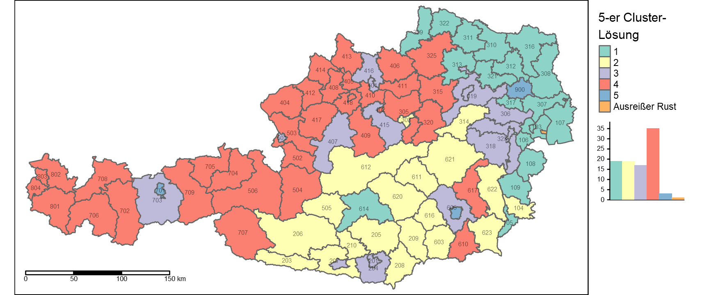</p>
<hr />
<p>🏆 <strong>Nun wissen wir, dass …</strong></p>
<ul>
<li>… clusteranalytische Verfahren nur so gut sind, wie die <strong>Operationalisierung</strong> des zu klassifizierenden Konzepts;</li>
<li>… hoch korrelierte Cluster-Variablen eine <strong>implizite Gewichtung</strong> bewirken können;</li>
<li>… <strong>unterschiedliche Messskalen</strong> zu einer <strong>Verzerrung</strong> von Proximitätsmaßen führen können;<br />
(👉 z-Transformation)</li>
<li>… <strong>Ausreißer</strong> sich negativ auf die Intracluster-Homogenität auswirken;<br />
(👉 Single-Linkage-Clusterung)</li>
<li>… sich die <strong>optimale Clusteranzahl</strong> aus einer Abwägung inhaltlicher Auflösung und Übersichtlichkeit heraus ergibt.</li>
</ul>
<p><strong>🤔 Und was sagt der Captain abschließend dazu?</strong></p>
<p></p>

</div>
</div>
            </section>

          </div>
        </div>
      </div>
<a href="06_multireg_II.html" class="navigation navigation-prev " aria-label="Previous page"><i class="fa fa-angle-left"></i></a>
<a href="08_cluster_II_v2.html" class="navigation navigation-next " aria-label="Next page"><i class="fa fa-angle-right"></i></a>
    </div>
  </div>
<script src="libs/gitbook-2.6.7/js/app.min.js"></script>
<script src="libs/gitbook-2.6.7/js/clipboard.min.js"></script>
<script src="libs/gitbook-2.6.7/js/plugin-search.js"></script>
<script src="libs/gitbook-2.6.7/js/plugin-sharing.js"></script>
<script src="libs/gitbook-2.6.7/js/plugin-fontsettings.js"></script>
<script src="libs/gitbook-2.6.7/js/plugin-bookdown.js"></script>
<script src="libs/gitbook-2.6.7/js/jquery.highlight.js"></script>
<script src="libs/gitbook-2.6.7/js/plugin-clipboard.js"></script>
<script>
gitbook.require(["gitbook"], function(gitbook) {
gitbook.start({
"sharing": {
"github": false,
"facebook": false,
"twitter": false,
"linkedin": false,
"weibo": false,
"instapaper": false,
"vk": false,
"whatsapp": false,
"all": false
},
"fontsettings": {
"theme": "white",
"family": "sans",
"size": 2
},
"edit": {
"link": null,
"text": null
},
"history": {
"link": null,
"text": null
},
"view": {
"link": null,
"text": null
},
"download": null,
"search": {
"engine": "fuse",
"options": null
},
"toc": {
"collapse": "section"
},
"info": true
});
});
</script>

<!-- dynamically load mathjax for compatibility with self-contained -->
<script>
  (function () {
    var script = document.createElement("script");
    script.type = "text/javascript";
    var src = "true";
    if (src === "" || src === "true") src = "https://mathjax.rstudio.com/latest/MathJax.js?config=TeX-MML-AM_CHTML";
    if (location.protocol !== "file:")
      if (/^https?:/.test(src))
        src = src.replace(/^https?:/, '');
    script.src = src;
    document.getElementsByTagName("head")[0].appendChild(script);
  })();
</script>
</body>

</html>
